aliases:
- Motion Profile
- Trapezoidal ProfileMotion Profiles
Success Criteria
- Configure a motion system with PID and FeedForward
- Add a trapezoidal motion profile command (runs indefinitely)
- Create a decorated version with exit conditions on reaching the target
- Create a small auto sequence to cycle multiple points
- Create a set of buttons for different setpoints
Synopsis
Motion Profiling is the process of generating smooth, controlled motion. This is typically done using controlled, intermediate setpoints, consideration of the system's physical properties, and other imposed limitations.
In FRC our tooling generally utilizes a Trapazoidal profile, allowing us precise control of system position, maximum system speed, and acceleration applied to the system.
Benefits of Motion profiling
Motion Profiling resolves several problems that can come up with "simpler" control systems such as simple open loop or straight PID control.
The first comes from acknowledgement of the basic physics equation
The next relates to "tuning": The process of adjusting robot parameters to generate consistent motion. If you've gone through the PID tuning process, you probably remember one struggle: Your tuning works great until you move the setpoint a larger distance, at which point it wildly misbehaves, and the system acts erratically. This case is caused by sharp changes in system error, resulting in the PID generating a large output. Motion profiles instead change the setpoint at a controlled rate, ensuring a small system error keeping the PID in a much more stable state.
The extra complexity is worth it! Tuning a system using a Motion Profile is significantly less work than without it, since all the biggest pain points are eliminated. Your PID behaves better, with no overshoot or sharp outputs, and your system
How it works
For these purposes, we're going to discuss a "positional" control system, such as an Elevator or Arm .
Motion Profiles still apply to velocity control Rollers and Flywheels; In those cases, we ignore the position, smoothly accelerating to our target velocity. This means we only see half the benefit on those systems.
The system we typically use is a "Trapezoidal" profile, named after the shape of the velocity graph it generates.
This system has just two parameters:
- A maximum velocity
- a maximum acceleration.
By having these values set at values the physical system can achieve, our motion profile can split up one large motion into 3 segments.
- An acceleration step, where the motor is approaching the max speed
- Running at our max speed
- Decelerating on approach to the final position.
Because our Motion Profile is aware of our system capabilities, it can then constrain our setpoint changes to ones that that our system can actually achieve, generating a smooth motion without overshooting our final target (or goal).
Since we know how long it takes to accelerate and decelerate, and the max speed, we can also predict exactly how long the whole motion takes!
The entire motion looks just like this: 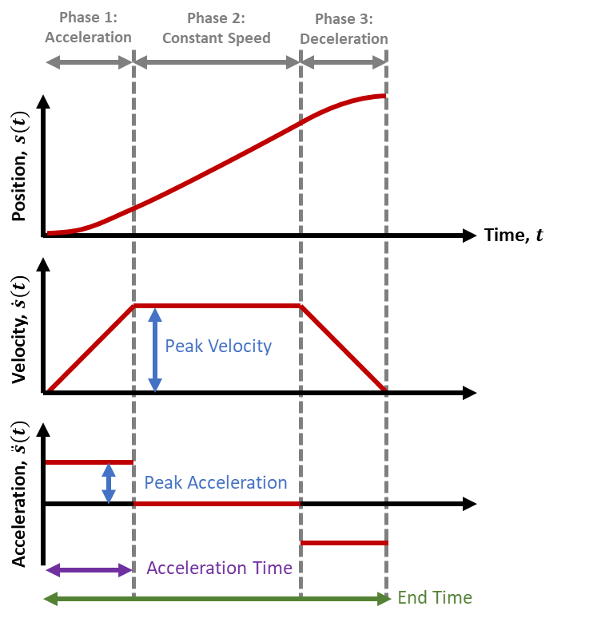
Finding Max Velocity
A theoretical maximum can be found by multiplying your maximum motor RPM by your gear reduction: It's very similar to configuring your encoder conversion factor, then hitting it with your maximum velocity.
In practice, you normally want to start by setting it slow, at something that you can visually track: Often ~1-2 seconds for a specific range of motion. This helps with testing, since you can see it work and mentally confirm whether it's what you expect.
As you improve and tune your system, you can simply then increase the maximum until your system feels unsafe, and then go back down a bit.
In many practical FRC systems, you may not hit the actual maximum speed of your system: Instead, the system well simply accelerate to the halfway point and then decelerate. This is normal, and simply means the system is constrained by the acceleration.
Finding Max Acceleration
The maximum acceleration effectively represents the actual force we're telling the motor to apply. It's easiest to understand at the extremes:
- When set to zero, your system will never have force applied; It won't move at all.
- When set to infinite, your system assumes it can reach to the max velocity instantly; This is effectively just applying as much force as your system is configured for.
However, in actual systems you want them to move, so zero is useless. And infinite is useful, but impractical: Thinking back to our equation,
This final form helps us clearly see we have a maximum: Our output force is is defined by the motor's max output and our system's mass, giving us a maximum constraint:
Note this is highly simplified: Actually calculating max acceleration this way on real-world systems is often non-trivial, and involves significantly more variables and equations than listed here. However, it's the concept that's important.
In practice, the easiest way to find acceleration is to simply start small increase the acceleration until the system moves how you want. If it starts making concerning noises or over-shooting, then you've gone too far, and you should back it off.
Revisiting the graph
With some background, there's a couple ways to visually interpret this graph:
- This graph always represents the generated profile, but also should reflect your actual position too! When configured correctly, the generated graph is always within our system's capability.
- The calculated "position" setpoint is generally what we feed to our system's PID output.
- The "acceleration" impacts the angle on our velocity trapezoid! At infinite, it's vertical, and at zero, it's horizontal.
Interactions with FeedForwards
Having a motion profile also enables inputs for FeedForwards, allowing even higher levels of precision on your expected outputs.
At the basic level, positional PIDs can be trivially configured with kG and kS, which only depend on values known on all systems. kG is constant or depends on position, and kS depends only on direction of motion.
However, the kV and kA gains both depend on not just on position, but also a known system acceleration and velocity targets.... which we haven't had with arbitrary setpoint jumps.
But now, we can plan our motion: Giving us velocity and acceleration targets. With the right feedforwards, we can now compute the moment-to-moment output for the entire motion in advance!
Interaction with PIDs
The most important part is that our error changes from one big setpoint jump to a lot of small, properly calculated ones.
Without a feed-forward, simply having a motion profile completely removes the big transitions and associated output spikes. This makes tuning simpler, less critical, and often allows for more aggressive PID gains without problems. However, many positional systems will usually still need an I term to accurately hit setpoints accurately without rapid oscillations from a high P term.
With a partial FeedForward (kG + kS) the Feed-Forward handles the base lifting, reducing the need of a PID to handle gravity. This leaves the PID left to handle the motion itself, and it can easily hit setpoint targets without an I term, barring weight changes (such as loaded game pieces)
With a full FeedForward, the error between commanded motion and actual motion will be extremely small, making the PID's impact almost completely irreverent. This makes the PID tuning extremely easy, and the gains can be tuned for precisely the expected disturbances you'll encounter, such as impacts or weight variation.
Note, that despite having theoretically minimal impact, you would still always want a PID to ensure the system gets back to position in cause of error.
Tuning Errors and Adjustments
Fortunately, with motion profiles you get a lot, with very little in the way of potential problems.
Most errors can be easily captured by looking at the position and velocity graph of a real system, and applying a bit of reasoning on what line isn't matching up.
- Overshooting the position setpoint at the end: This likely means your acceleration is too high, or your I gain is too large.
- The system is lagging behind the setpoints and the lines are diverting entirely. It then overshoots the setpoint: Your system cannot output enough power to meet your acceleration constraint. Make sure you have appropriate current limits, and/or lower the acceleration within the system capability.
- The system is lagging behind the setpoints so the lines are parallel but offset: This is typical when not using kA+kV, or when they're set too low. The difference is how long it takes the PID control to kick in and make up for what kA+kV should be generating for that motion.
- The motion is very jerky when travelling at the max speed: This usually means kV is too high, but can be kS being too high. Lowering kP may help as well.
- It starts really awful and smooths out: Likely kA is too high, although again kS and kP can influence this.
Implementing <system type here>
The full system and example code is part of the system descriptions:
The most effective way in general is using the WPILib ProfiledPIDController providing the simplest complete implementation.
This works as a straight upgrade to the standard PID configuration, but takes 2 additional parameters that grant huge performance gains and easier tuning.
ExampleElevator extends SubsystemBase{
SparkMax motor = new SparkMax(42,kBrushless);
//Configure reasonable profile constraints
private final TrapezoidProfile.Constraints constraints =
new TrapezoidProfile.Constraints(kMaxVelocity, kMaxAcceleration);
//Create a PID that obeys those constraints in it's motion
//Likely, you will have kI=0 and kD=0
//Note, the unit of our PID will need to be in Volts now.
private final ProfiledPIDController controller =
new ProfiledPIDController(kP, kI, kD, constraints, 0.02);
//Our feedforward object appropriate for our subsystem of choice
//When in doubt, set these to zero (equivilent to no feedforward)
//Will be calculated as part of our tuning.
private final ElevatorFeedforward feedforward =
new ElevatorFeedforward(kS, kG, kV);
//Lastly, we actually use our new
public Command setHeight(Supplier<Distance> position){
return run(
()->{
//Update our goal with any new targets
controller.setGoal(position.get().in(Inches));
//Calculate the voltage
voltage=
motor.setVoltage(
controller.calculate(motor.getEncoder().getPosition())
+ feedforward.calculate(controller.getSetpoint().velocity)
);
});
}
The big difference compared to our other, simpler PID is that we're using motor.setVoltage for this; This relates to the inclusion of FeedForwards which prefers volts for improved consistency as the battery drains.
While the PID itself doesn't care, since we're adding them together they do need to be the same unit.
If you already calculated your PID gains using motor.set() or
FeedForwards
Requires:
Motor Control
Success Criteria
- Create a velocity FF for a roller system that enables you to set the output in RPM
- Create a gravity FF for a elevator system that holds the system in place without resisting external movement
- Create a gravity FF for an arm system that holds the system in place without resisting external movement
Synopsis
Feedforwards model an expected motor output for a system to hit specific target values.
The easiest example is a motor roller. Let's say you want to run at ~3000 RPM. You know your motor has a top speed of ~6000 RPM at 100% output, so you'd correctly expect that driving the motor at 50% would get about 3000 RPM. This simple correlation is the essence of a feed-forward. The details are specific to the system at play.
Explanation
The WPILib docs have good fundamentals on feedforwards that is worth reading.
https://docs.wpilib.org/en/stable/docs/software/advanced-controls/controllers/feedforward.html
Tuning Parameters
Feed-forwards are specifically tuned to the system you're trying to operate, but helpfully fall into a few simple terms, and straightforward calculations. In many cases, the addition of one or two terms can be sufficient to improve and simplify control.
kS : Static constant
The simplest feedforward you'll encounter is the "static feed-forward". This term represents initial momentum, friction, and certain motor dynamics.
You can see this in systems by simply trying to move very slow. You'll often notice that the output doesn't move it until you hit a certain threshhold. That threshhold is approximately equal to kS.
The static feed-forward affects output according to the simple equation of
kG : Gravity constant
a kG value effectively represents the value needed for a system to negate gravity.
Elevators are the simpler case: You can generally imagine that since an elevator has a constant weight, it should take a constant amount of force to hold it up. This means the elevator Gravity gain is simply a constant value, affecting the output as
A more complex kG calculation is needed for pivot or arm system. You can get a good sense of this by grabbing a heavy book, and holding it at your side with your arm down. Then, rotate your arm outward, fully horizontal. Then, rotate your arm all the way upward. You'll probably notice that the book is much harder to hold steady when it's horizontal than up or down.
The same is true for these systems, where the force needed to counter gravity changes based on the angle of the system. To be precise, it's maximum at horizontal, zero when directly above or below the pivot. Mathematically, it follows the function
This form of the gravity constant affects the output according to
kV : Velocity constant
The velocity feed-forward represents the expected output to maintain a target velocity. This term accounts for physical effects like dynamic friction and air resistance, and a handful of
This is most easily visualized on systems with a velocity goal state. In that case,
In contrast, for positional control systems, knowing the desired system velocity is quite a challenge. In general, you won't know the target velocity unless you're using a Motion Profiles to to generate the instantaneous velocity target.
kA : Acceleration constant
The acceleration feed-forward largely negates a few inertial effects. It simply provides a boost to output to achieve the target velocity quicker.
like
The equations of FeedForward
Putting this all together, it's helpful to de-mystify the math happening behind the scenes.
The short form is just a re-clarification of the terms and their units
A roller system will often simply be
An elevator system will look similar:
Lastly, elevator systems differ only by the cosine term to scale kG.
Of course, the intent of a feed-forward is to model your mechanics to improve control. As your system increases in complexity, and demands for precision increase, optimal control might require additional complexity! A few common cases:
- If you have a pivot arm that extends, your kG won't be constant!
- Moving an empty system and one loaded with heavy objects might require different feed-forward models entirely.
- Long arms might be impacted by motion of systems they're mounted on, like elevators or the chassis itself! You can add that in and apply corrective forces right away.
Feed-forward vs feed-back
Since a feed-forward is prediction about how your system behaves, it works very well for fast, responsive control. However, it's not perfect; If something goes wrong, your feed-forward simply doesn't know about it, because it's not measuring what actually happens.
In contrast, feed-back controllers like a PID are designed to act on the error between a system's current state and target state, and make corrective actions based on the error. Without first encountering system error, it doesn't do anything.
The combination of a feed-forward along with a feed-back system is the power combo that provides robust, predictable motion.
FeedForward Code
WPILib has several classes that streamline the underlying math for common systems, although knowing the math still comes in handy! The docs explain them (and associated warnings) well.
https://docs.wpilib.org/en/stable/docs/software/advanced-controls/controllers/feedforward.html
Integrating in a robot project is as simple as crunching the numbers for your feed-forward and adding it to your motor value that you write every loop.
ExampleSystem extends SubsystemBase(){
SparkMax motor = new SparkMax(...)
// Declare our FF terms and our object to help us compute things.
double kS = 0.0;
double kG = 0.0;
double kV = 0.0;
double kA = 0.0;
ElevatorFeedforward feedforward = new ElevatorFeedforward(kS, kG, kV, kA);
ExampleSubsystem(){}
Command moveManual(double percentOutput){
return run(()->{
var output ;
//We don't have a motion profile or other velocity control
//Therefore, we can only assert that the velocity and accel are zero
output = percentOutput+feedforward.calculate(0,0);
// If we check the math, this feedforward.calculate() thus
// evaluates as simply kg;
// We can improve this by instead manually calculating a bit
// since we known the direction we want to move in
output = percentOutput + Math.signOf(percentOutput) + kG;
motor.set(output);
})
}
Command movePID(double targetPosition){
return run(()->{
//Same notes as moveManual's calculations
var feedforwardOutput = feedforward.calculate(0,0);
// When using the Spark closed loop control,
// we can pass the feed-forward directly to the onboard PID
motor
.getClosedLoopController()
.setReference(
targetPosition,
ControlType.kPosition,
ClosedLoopSlot.kSlot0,
feedforwardOutput,
ArbFFUnits.kPercentOut
);
//Note, the ArbFFUnits should match the units you calculated!
})
}
Command moveProfiled(double targetPosition){
// This is the only instance where we know all parameters to make
// full use of a feedforward.
// Check [[Motion Profiles]] for further reading
}
}
Rev released a new FeedForward config API that might allow advanced feed-forwards to be run directly on controller. Look into it and add examples!
https://codedocs.revrobotics.com/java/com/revrobotics/spark/config/feedforwardconfig
Finding Feed-Forward Gains
When tuning feed-forwards, it's helpful to recognize that values being too high will result in notable problems, but gains being too low generally result in lower performance.
Just remember that the lowest possible value is 0; Which is equivalent to not using that feed forward in the first place. Can only improve from there.
It's worth clarifying that the "units" of feedForward are usually provided in "volts", rather than "percent output". This allows FeedForwards to operate reliably in spite of changes of supply voltage, which can vary from 13 volts on a fresh battery to ~10 volts at the end of a match.
Percent output on the other hand is just how much of the available voltage to output; This makes it suboptimal for controlled calculations in this case.
Finding kS and kG
These two terms are defined at the boundary between "moving" and "not moving", and thus are closely intertwined. Or, in other words, they interfere with finding the other. So it's best to find them both at once.
It's easiest to find these with manual input, with your controller input scaled down to give you the most possible control.
Start by positioning your system so you have room to move both up and down. Then, hold the system perfectly steady, and increase output until it just barely moves upward. Record that value.
Hold the system stable again, and then decrease output until it just barely starts moving down. Again, record the value.
Thinking back to what each term represents, if a system starts moving up, then the provided input must be equal to
Helpfully, for systems where
For pivot/arm systems, this routine works as described if you can calculate kG at approximately horizontal. It cannot work if the pivot is vertical. If your system cannot be held horizontal, you may need to be creative, or do a bit of trig to account for your recorded
Importantly, this routine actually returns a kS that's often slightly too high, resulting in undesired oscillation. That's because we recorded a minimum that causes motion, rather than the maximum value that doesn't cause motion. Simply put, it's easier to find this way. So, we can just compensate by reducing the calculated kS slightly; Usually multiplying it by 0.9 works great.
Finding roller kV
Because this type of system system is also relatively linear and simple, finding it is pretty simple. We know that
We know
This means we can quickly assert that
Finding kV+Ka
Beyond roller kV, kA and kV values are tricky to identify with simple routines, and require Motion Profiles to take advantage of. As such, they're somewhat beyond the scope of this article.
The optimal option is using System Identification to calculate the system response to inputs over time. This can provide optimal, easily repeatable results. However, it involves a lot of setup, and potentially hazardous to your robot when done without caution.
The other option is to tune by hand; This is not especially challenging, and mostly involves a process of moving between goal states, watching graphs, and twiddling numbers. It usually looks like this:
- Identify two setpoints, away from hard stops but with sufficient range of motion you can hit target velocities.
- While cycling between setpoints, increase increase kV until the system generates velocities that match the target velocities. They'll generally lag behind during the acceleration phase.
- Then, increase kA until the acceleration shifts and the system perfectly tracks your profile.
- Increase profile constraints and and repeat until system performance is attained. Starting small and slow prevents damage to the mechanics of your system.
This process benefits from a relatively low P gain, which helps keep the system stable and near the intended setpoints, but running without a PID at all is actually very informative too.
Once your system is tuned, you'll probably want a relatively high P gain, now that you can assert the feed-forward is keeping your error close to zero, but be aware that this can result in slight kV errors resulting in a "jerky" motion. Lowering kV slightly below nominal can help resolve this.
Modelling changing systems
NEEDS TESTING We haven't had to do this much! Be mindful that this section may contain structural errors, or we may find better ways to approach these issues
When considering these systems, remember that they're linear systems: This helpful quirk means we can simply add the system responses together:
ElevatorFeedforward feedforward = new ElevatorFeedforward(kS, kG, kV, kA);
ElevatorFeedforrward ff_gamepiece = new ElevatorFeedforward(kS, kG, kV, kA);
//...
var output = feedforward.calculate(...) + ff_gamepiece.calculate(...)
This lets you respond to things such as a heavy game piece being loaded.
Modelling Complex Systems
As systems increase in complexity and precision requirements, you might need to do more advanced modelling, while keeping in mind the mathematical flexibility of adding and multiplying smaller feed-forward components together!
Here's some examples:
- If your arm extends, you can simply interpolate between a "fully retracted" feedforward and a "fully extended" ones; Thanks to the system linearity, this allows you to model the entire range of values quickly and easily.
- Arm motions can be impacted by the acceleration of a chassis or elevator; While gravity is a constant acceleration (and thus constant force), other non-constant accelerations can also be modeled as part of your feedforward and added to the base calculations.
Footnotes
Note, you might observe that the kCos output,
PID
tags:Requires
Commands
Encoder Basics
Success Criteria
- Create a PID system on a test bench
- Tune necessary PIDs using encoders
- Set a velocity using a PID
- Set a angular position using a PID
- Set a elevator position using a PID
- Plot the system's position, target, and error as you command it.
TODO
TODO:
Add some graphs
https://github.com/DylanHojnoski/obsidian-graphs
Write synopsis
https://docs.revrobotics.com/revlib/spark/closed-loop
Synopsis
A PID system is a Closed Loop Controller designed to reduce system error through a simple, efficient mathematical approach.
You may also appreciate Chapter 1 and 2 from controls-engineering-in-frc.pdf , which covers PIDs very well.
Definitions:
Before getting started, we need to identify a few things:
- A setpoint: This is the goal state of your system. This will have units in that target state, be it height, meters, rotations/second, or whatever you're trying to do.
- An output: This is often a motor actuator, and likely
- A measurement: The current state of your system from a sensor; It should have the same units as your Setpoint.
- Controller: The technical name for the logic that is controlling the motor output. In our case, it's a PID controller, although many types of controllers exist.
Deriving a PID Controller from scratch
To get an an intuitive understanding about PIDs and feedback loops, it can help to start from scratch, and kind of recreating it from the basic assumptions and simple code.
Let's start from the core concept of "I want this system to go to a position and stay there".
Initially, you might simply say "OK, if we're below the target position, go up. If we're above the target position, go down." This is a great starting point, with the following pseudo-code.
setpoint= 15 //your target position, in arbitrary units
sensor= 0 //Initial position
if(sensor < setpoint){ output = 1 }
else if(sensor > setpoint){ output = -1 }
motor.set(output)
However, you might see a problem. What happens when setpoint and sensor are equal?
If you responded with "It rapidly switches between full forward and full reverse", you would be correct. If you also thought "This sounds like it might damage things", then you'll understand why this controller is named a "Bang-bang" controller, due to the name of the noises it tends to make.
Your instinct for this might be to simply not go full power. Which doesn't solve the problem, but reduces it's negative impacts. But it also creates a new problem. Now it's going to oscillate at the setpoint (but less loudly), and it's also going to take longer to get there.
So, let's complicate this a bit. Let's take our previous bang-bang, but split the response into two different regions: Far away, and closer. This is easier if we introduce a new term: Error. Error just represents the difference between our setpoint and our sensor, simplifying the code and procedure. "Error" helpfully is a useful term, which we'll use a lot.
run(()->{
setpoint= 15 //your target position, in arbitrary units
sensor= 0 //read your sensor here
error = setpoint-sensor
if (error > 5){ output = -1 }
else if(error > 0){ output = -0.2 }
else if(error < 0){ output = 0.2 }
else if(error < -5){ output = 1 }
motor.set(output)
})
We've now slightly improved things; Now, we can expect more reasonable responses as we're close, and fast responses far away. But we still have the same problem; Those harsh transitions across each else if. Splitting up into more and more branches doesn't seem like it'll help. To resolve the problem, we'd need an infinite number of tiers, dependent on how far we are from our targets.
With a bit of math, we can do that! Our error term tells us how far we are, and the sign tells us what direction we need to go... so let's just scale that by some value. Since this is a constant value, and the resulting output is proportional to this term, let's call it kp: Our proportional constant.
run(()->{
setpoint= 15 //your target position, in arbitrary units
sensor= 0 //read your sensor here
kp = 0.1
error = setpoint-sensor
output = error*kp
motor.set(output)
)}
Now we have a better behaved algorithm! At a distance of 10, our output is 1. At 5, it's half. When on target, it's zero! It scales just how we want.
Try this on a real system, and adjust the kP until your motor reliably gets to your setpoint, where error is approximately zero.
In doing so, you might notice that you can still oscillate around your setpoint if your gains are too high. You'll also notice that as you get closer, your output drops to zero. This means, at some point you stop being able to get closer to your target.
This is easily seen on an elevator system. You know that gravity pulls the elevator down, requiring the motor to push it back up. For the sake of example, let's say an output of 0.2 holds it up. Using our previous kP of 0.1, a distance of 2 generates that output of 0.2. If the distance is 1, we only generate 0.1... which is not enough to hold it! Our system actually is only stable below where we want. What gives!
This general case is referred to as "standing error" ; Every loop through our PID fails to reduce the error to zero, which eventually settles on a constant value. So.... what if.... we just add that error up over time? We can then incorporate that error into our outputs. Let's do it.
setpoint= 15 //your target position, in arbitrary units
errorsum=0
kp = 0.1
ki = 0.001
run(()->{
sensor= 0 //read your sensor here
error = setpoint-sensor
errorsum += error
output = error*kp + errorsum*ki
motor.set(output)
}
The mathematical operation involved here is called integration, which is what this term is called. That's the "I" in PID.
In many practical FRC applications, this is probably as far as you need to go! P and PI controllers can do a lot of work, to suitable precision. This a a very flexible, powerful controller, and can get "pretty good" control over a lot of mechanisms.
This is probably a good time to read across the WPILib PID Controller page; This covers several useful features. Using this built-in PID, we can reduce our previous code to a nice formalized version that looks something like this.
PIDController pid = new PIDController(kP, kI, kD);
run(()->{
sensor = motor.getEncoder.getPosition();
motor.set(pid.calculate(sensor, setpoint))
})
A critical detail in good PID controllers is the iZone or ErrorZone. We can easily visualize what problem this is solving by just asking "What happens if we get a game piece stuck in our system"?
Well, we cannot get to our setpoint. So, our errorSum gets larger, and larger.... until our system is running full power into this obstacle. That's not great. Most of the time, something will break in this scenario.
So, the iZone allows you to constrain the amount of error the controller actually stores. It might be hard to visualize the specific numbers, but you can just work backward from the math. If output = errorsum*kI, then maxIDesiredTermOutput=iZone*kI. So iZone=maxIDesiredTermOutput/kI.
Lastly, what's the D in PID?
Well, it's less intuitive, but let's try. Have you seen the large spike in output when you change a setpoint? Give the output a plot, if you so desire. For now, let's just reason through a system using the previous example PI values, and a large setpoint change resulting in an error of 20.
Your PI controller is now outputting a value of 2.0 ; That's double full power! Your system will go full speed immediately with a sharp jolt, have a ton of momentum at the halfway point, and probably overshoot the final target. So, what we want to do is constrain the speed; We want it fast but not too fast. So, we want to reduce it according to how fast we're going.
Since we're focusing on error as our main term, let's look at the rate the error changes. When the error is changing fast we want to reduce the output. The difference is simply defined as error-previousError, so a similar strategy with gains gives us output+=kP*(error-previousError) .
This indeed gives us what we want: When the rate of change is high, the contribution is negative and large; Acting to reduce the total output, slowing the corrective action.
However, this term has another secret power, which disturbance rejection. Let's assume we're at a steady position, and the system is settled, and error=0. Now, let's bonk the system downward, giving us a sudden large, positive error. Suddenly nonzero-0 is positive, and the system generates a upward force. For this interaction, all components of the PID are working in tandem to get things back in place quickly.
Adding this back in, gives us the fundamental PID loop:
setpoint= 15 //your target position, in arbitrary units
errorsum=0
lastSensor=0
kp = 0.1
ki = 0.001
kd = 0.01
run(()->{
sensor= 0 //read your sensor here
error = setpoint-sensor
errorsum += error
errordelta = sensor-lastSensor
lastSensor=sensor
output = error*kp + errorsum*ki + errordelta*kd
motor.set(output)
}
Complete Java Example
Adding PID control to a system can vary slightly on system, but at the core it's pretty straightforward:
For controlling a simple positional system like an Elevator, it'd looks something like this
ExampleElevator extends SubsystemBase{
SparkMax motor = new SparkMax(42,kBrushless);
//Create a PID that obeys those constraints in it's motion
//Likely, you will have kI=0 and kD=0
//The unit of error will be in inches
//The P gain units should be percentoutput/distance
private final PIDController controller =
new PIDController(kP, kI, kD);
public Command setHeight(Supplier<Distance> position){
return run(
()->{
var output=controller.calculate(
motor.getEncoder().getPosition(),
position.in(Inches)
);
motor.set(output);
});
}
}
For a Roller system, we often want to control the rate, not the position: That's easy too!
ExampleElevator extends SubsystemBase{
SparkMax motor = new SparkMax(42,kBrushless);
//Create a PID that obeys those constraints in it's motion
//Likely, you will have kI=0 and kD=0
//The unit of error will be in RotationsPerMinute or
// RotationsPerSecond (whichever you prefer) to work with.
//The P gain units should be percentoutput/rate
private final PIDController controller =
new PIDController(kP, kI, kD);
//Lastly, we actually use our new
public Command setSpeed(Supplier<AngularVelocity> speed){
return run(
()->{
var output=controller.calculate(
motor.getEncoder().getVelocity(),
speed.in(RPS) //or RPM if your gains are adjusted with that
);
motor.set(output);
});
}
}
Looking carefully, we can see that the only thing we do is just change our units around, as well as the function calls to get the appropriate units.
Limitations of PIDs
OK, that's enough nice things. Understanding PIDs requires knowing when they work well, and when they don't, and when they actually cause problems.
- PIDs are reactive, not predictive. Note our key term is "error" ; PIDs only act when the system is already not where you want it, and must be far enough away that the generated math can create corrective action.
- Large setpoint changes break the math. When you change a setpoint, the P output gets really big, really fast, resulting in an output spike. When the PID is acting to correct it, the errorSum for the I term is building up, and cannot decrease until it's on the other side of the setpoint. This almost always results in overshoot, and is a pain to resolve.
- Oscillation: PIDs inherently generate oscillations unless tuned perfectly. Sometimes big, sometimes small.
- D term instability: D terms are notoriously quirky. Large D terms and velocity spikes can result in bouncy, jostly motion towards setpoints, and can result in harsh, very rapid oscillations around the zero, particularly when systems have significant Mechanical Backlash.
- PIDS vs Hard stops: Most systems have one or more Hard Stops, which present a problem to the I term output. This requires some consideration on how your encoders are initialized, as well as your setpoints.
- Tuning is either simple....or very time consuming.
- Only works on "Linear" systems: Meaning, systems where the system's current state does not impact how the system responds to a given output. Arms are an example of a non-linear system, and to a given output very differently when up and horizontally. These cannot be properly controlled by just a PID.
So, how do you make the best use of PIDs?
- Reduce the range of your setpoint changes. There's a few ways to go about it, but the easiest are clamping changes, Slew Rate Limiting and Motion Profiles . With such constraints, your error is always small, so you can tune more aggressively for that range.
- Utilize FeedForwards to create the basic action; Feed-forwards create the "expected output" to your motions, reducing the resulting error significantly. This means your PID can be tuned to act sharply on disturbances and unplanned events, which is what they're designed for.
In other words: This is an error correction mechanism. By reducing or controlling the initial error a PID would act on, you can greatly simplify the PID's affect on your system, usually making it easier to get better motions. Using a PID as the "primary action" for a system might work, but tends to generate unexpected challenges.
Tuning
Tuning describes the process of dialing in our "gain values"; In our examples, we named these kP, kI, and kD. These values don't change the process of our PID, but it changes how it responds.
There's actually several "formal process" for tuning PIDs; However, in practice these often are more complicated and aggressive than we really want. You can read about them if you'd like PID Tuning via Classical Methods
In practice though, the typical PID tuning process is more straightforward, but finicky.
- Define a small range you want to work with: This will be a subset of
- Create a plot of your setpoint, current state/measurements, and system output. Basic Telemetry is usually good enough here.
- Starting at low values, increase the P term until your system starts to oscillate near the goal state. Reduce the P term until it doesn't. Since you can easily
- Add an I term, and increase the value until your system gets to the goal state with minimal overshoot. Often I terms should start very small; Often around 1%-10% of your P term. Remember, this term is summed every loop; So it can build up very quickly when the error is large.
- If you're tuning a shooter system, get it to target speed, and feed in a game piece; Increase the D term until you maintain the RPM to an effective extent.
Rev controllers by default implement a velocity filter, making it nearly impossible to detect rapid changes in system velocity. This in turn makes it nearly impossible to tune a D-term.
#todo Document how to remove these filters
Be aware that poorly tuned PIDs might have very unexpected, uncontrolled motions, especially when making big setpoint changes.
They can jolt unexpectedly, breaking chains and gearboxes. They can overshoot, slamming into endstops and breaking frames. They'll often oscillate shaking loose cables, straps, and stressing your robot.
Always err on the side of making initial gains smaller than expected, and focus on safety when tuning.
Remember that for PID systems the setpoint determines motor output; If the bot is disabled, and then re-enabled, the bot will actuate to the setpoint!
Make sure that your bot handles re-enabling gracefully; Often the best approach is to re-initialize the setpoint to the bot's current position, and reset the PID controller to clear the I-term's error sum.
Streamlining tuning the proper way
In seasons past, a majority of our programming time was just fiddling with PID values to get the bot behaviour how we want it. This really sucks. Instead, there's more practical routines to avoid the need for precision PID tuning.
- Create a plot of your setpoint, current state/measurements, and system output. Basic Telemetry is usually good enough here.
- Add a FeedForward : It doesn't have to be perfect, but having a basic model of your system massively reduces the error, and significantly reduces time spent fixing PID tuning. This is essential for Arms; The FeedForward can easily handle the non-linear aspects that the PID struggles with.
- In cases where game pieces contribute significantly to the system load, account for it with your FeedForward: Have two different sets of FeedForward values for the loaded and unloaded states
- Use Motion Profiles: A Trapezoidal profile is optimal and remarkably straightforward. This prevents many edge cases on PIDs such as sharp transitions and overshoot. It provides very controlled, rapid motion.
- Alternatively, reduce setpoint changes through use of a Ramp Rate or Slew Rate Limiting. This winds up being as much or more work than Motion Profiles with worse results, but can be easier to retrofit in existing code.
- An even easier and less effective option is simply Clamp clamp the setpoint within a small range around the current state. This provides a max error, but does not eliminate the sharp transitions.
- Set a very small ClosedLoopRampRate; Just enough to prevent high-frequency oscillations, which will tend to occur when the setpoint is at rest, especially against Hard Stops or if Backlash is involved. This is just a Slew Rate Limiter being run on the motor controller against the output.
From here, the actual PID values are likely to barely matter, making tuning extremely straightforward:
- Increase the P term until you're on target through motions and not oscillating sharply at rest
- Find a sensible output value that fixes static/long term disturbances (change in weight, friction, etc). Calculate the target iZone to a sensible output just above what's needed to fix those.
- Start with I term of zero; Increase the I term if your system starts lagging during some long motions, or if it sometimes struggles to reach setpoint during
- If your system is expected to maintain it's state through predictable disturbances (such as maintaining shooter RPM when launching a game piece), test the system against those disturbances, and increase the D term as needed. You may need to decrease the P term slightly to prevent oscillations when doing this.
- Watch your plots. A well tuned system should
- Quickly approach the target goal state
- Avoid overshooting the target
- Settle on a stable output value
- Recover to the target goal state (quickly if needed)
TODO
- Discontinuity + setpoint wrappping for PIDs + absolute sensors
SuperStructure Rollers
tags:
aliases:
- Rollers
- RollerRequires:
Motor Control
Recommends:
FeedForwards
PID
Success Criteria
- Create a Roller serving as a simple intake
- Create Commands for loading, ejecting, and stopping
- Create a default command that stops the subsystem
- Bind the load and eject operations to a joystick
Optional Bonus criteria:
- Configure the Roller to use RPM instead of setPower
- Add a FeedForward and basic PID
- Confirm the roller roughly maintains the target RPM when intaking/ejecting
Synopsis
A Roller system is a simple actuator type: A single motor output mechanically connected to a rotating shaft. Objects contacting the shaft forms the useful motion of a Roller system. This can also extended with additional shafts, belts, or gearing to adjust the contact range.
Despite the simplicity, Rollers are very flexible and useful systems in FRC. When paired with clever mechanical design, Rollers can accomplish a wide variety of game tasks, empower other system types, and serve as the foundation of more complex systems.
Common use cases
On their own, rollers can be designed to serve a few functions
- Fixed position Intakes, responsible for pulling objects into a robot
- Simple scoring mechanisms for ejecting a game piece from the bot
- Simple launchers game pieces from the robot at higher speeds
- As motion systems to move game pieces through the bot
- As a simple feeder system for allowing or blocking game piece motion within the bot.
Rollers of this nature are very common on Kitbot designs, owing to the mechanical simplicity and robustness of these systems.
For more complex bots, Roller systems are usually modified with extra mechanical features or actuated. These include
- A Flywheel system, which provides more accurate launching of game pieces through precision control and increased momentum
- As Indexers/Feeder/Passthrough, providing precision control of game pieces through a bot.
- As actuated Intakes, often with rollers attached to Arms or linkages
These documents discuss the special considerations for improving Rollers in those applications.
Implementing a Roller
Analysis
In keeping with a Roller being a simple system, they're simple to implement: You've already done this with Motor Control.
To integrate a Roller system into your bot code, there's simply a few additional considerations:
- The function of your roller: This determines the role and name of your system. Like all subsystems, you want the name to be reflective of it's task, and unique to help clarify discussion around the system.
- Level of control needed: Rollers often start simple and grow in complexity, which is generally preferred. But, sometimes you can tell that your system will get complicated, and it's worth planning for.
- The base tasks this system performs.
- sometimes a Roller system will serve multiple roles: Usually, it's good to recognize this early to facilitate naming and configuration.
These are effectively what we see in Robot Design Analysis , but especially pertinent for Roller systems. Since your system will likely have multiple rollers, naming them "Rollers" is probably a bad idea. Assigning good names to the roller system and the actions it performs will make your code easier to follow.
Rollers generally will have a few simple actions, mostly setting a power and direction, with appropriate names depending on the intent of the action:
- Intake rollers usually have "intake", "eject", and "stop" which apply a fixed motor power. Larger game pieces might also have a "hold", which applies a lower power to keep things from shifting or falling out.
- Rollers in a Launcher role will usually have "shoot" and "stop", and rarely need to do much else.
- Rollers serving as a "feeder" will usually alternate between the "launcher" and "intake" roles; So it'll need appropriate actions for both.
Code Structure
Appropriately, a useful, minimal roller system is very straightforward, and done previously in Motor Control. But this time let's clean up names.
public Launcher extends SubsystemBase{
SparkMax motor = new SparkMax(42,kBrushless);
Launcher(){
//Normal constructor tasks
//Configure motor: See Motor Control for example code
//Set the default command; In this case, just power down the roller
setDefaultCommand(setPower(0)); //By default, stop
}
public Command setPower(double power){
// Note use of a command that requires the subsystem by default
// and does not exit
return run(()->motor.set(power));
}
public Command launchNear(){
return setPower(0.5);
}
public Command launchFar(){
return setPower(1);
}
}
For most Roller systems, you'll want to keep a similar style of code structure: By having a setPower(...) command Factory, you can quickly build out your other verbs with minimal hassle. This also allows easier testing, in case you have to do something like attach a Joystick to figure out the exact right power for a particular task.
In general, representing actions using named command factories with no arguments is preferable, and will provide the cleanest code base. The alternatives such as making programmers remember the right number, or feeding constants into setPower will result in much more syntax and likelyhood of errors.
Having dedicated command factories also provides a cleaner step into modifying logic for certain actions. Sometimes later you'll need to convert a simple task into a short sequence, and this convention allows that to be done easily.
Boosting Roller capability
Without straying too far from a "simple" subsystem, there's still a bit we can do to resolve problems, prevent damage, or streamline our code.
FeedForwards and PIDs for consistent, error free motion
Sometimes with Roller systems, you'll notice that the power needed to move a game piece often provides undesirable effects when initially contacting a game piece. Or, that sometimes a game piece loads wrong, jams, and the normal power setting won't move it.
This is a classic case where error correcting methods like PIDs shine! By switching your roller from a "set power" configuration to a "set rotational speed" one, you can have your rollers run at a consistent speed, adjusting the power necessary to keep things moving.
Notably though, PIDs for rollers are very annoying to dial in, owing to the fact that they behave very differently when loaded and unloaded, and even more so when they need to actually resolve an error condition like a jam!
The use of a FeedForward aids this significantly: Feedforward values for rollers are extremely easy to calculate, and can model the roller in an unloaded, normal state. This allows you to operate "unloaded", with nearly zero error. When operating with very low error, your PID will be much easier to deal with, and much more forgiving to larger values.
You can then tune the P gain of your PID such that your system behaves as expected when loaded with your game piece. If the FF+P alone won't resolve a jamming issue, but more power will, you can add an I gain until that helps push things through.
Sensors + Automated actions
Some Roller actions can be improved through the use of Sensors, which generally detect the game piece directly. This helps rollers know when they can stop and end sequences, or select one of two actions to perform.
However, it is possible (although sometimes a bit tricky) to read the motor controller's built in sensors: Often the Current draw and encoder velocity. When attempting this, it's recommended to use Trigger with a Debounce operation, which provides a much cleaner signal than directly reading these
You can also read the controller position too! Sometimes this requires a physical reference (effectively Homing a game piece), which allows you to assert the precise game piece location in the bot.
In other cases you can make assertions solely from relative motion: Such as asserting if the roller rotated 5 times, it's no longer physically possible to still be holding a game piece, so it's successfully ejected.
Default Commands handling states
Many Roller systems, particularly intakes will wind up with in one of two states: Loaded or Unloaded, with each requiring a separate conditional action.
The defaultCommand of a Roller system is a great place to use this, using the Command utility ConditionalCommand (akaeither ). A common case is to apply a "hold" operation when a game piece is loaded, but stop rollers if not.
Implemented this way, you can usually avoid more complex State Machines, and streamline a great deal of code within other sequences interacting with your roller.
Power Constraints + Current Limiting
Some Roller systems will pull objects in, where the object hits a hard stop. This is most common on intakes. In all cases, you want to constrain the power such that nothing gets damaged when the roller pulls a game piece in and stalls.
Beyond that, in some cases you can set the current very low, and replace explicit hold() actions and sensors with just this lower output current. You simply run the intake normally, letting the motor controller apply an appropriate output current.
This is not common, but can be useful to streamline some bots, especially with drivers that simply want to hold the intake button to hold a game piece.
Fault Detection
Should jams be possible in your roller system, encoder velocity and output current can be useful references, when combined with the consideration that
When a "jam" occurs, you can typicaly note
- A high commanded power
- A high output current
- A low velocity
//Current detection
new Trigger(()->motor.getAppliedOutput()>=.7 && motor.getOutputCurrent()>4).debounce(0.2);
//Speed Detection
new Trigger(()->motor.getAppliedOutput()>=.7 && motor.getEncoder().getVelocity()<300).debounce(0.2);
However, care should be taken to ensure that these do not also catch the spin up time for motors! When a motor transitions from rest to high speed, it also generates significant current, a low speed, and high commanded output.
Debouncing the trigger not only helps clean up the output signal, but for many simple Roller systems, they spin up quickly enough that the debounce time can simply be set higher than the spin up duration.
Superstructure Indexer
tags:
- stub
aliases:
- Indexer
- Passthrough
- FeederSynopsis
Superstructure component that adds additional control axes between intakes and scoring mechanisms. In practice, indexers often temporarily act as part of those systems at different points in time, as well performing it's own specialized tasks.
Common when handling multiple game pieces for storage and alignment, game pieces require re-orientation, adjustment or temporary storage, and for flywheel systems which need to isolate game piece motion from spinup.
Success Criteria
- ???
Code Considerations
Setting up an indexer is often a challenging process. It will naturally inherit several design goals and challenges from the systems it's connected to. This means it will often have a more complex API than most systems, often adopting notation from the connected systems.
The Indexer is often sensitive to hardware design quirks and changes from those adjacent systems, which can change their behavior, and thus the interfacing code.
Additionally, game piece handoffs can be mechanically complex, and imperfect. Often Indexers absorb special handling and fault detection, or at least bring such issues to light. Nominally, any such quirks are identified and hardware solutions implemented, or additional sensing is provided to facilitate code resolutions.
Sensing
Indexers typically require some specific information about the system state, and tend to be a place where some sort of sensor ends up as a core operational component. The exact type and placement can vary by archtype, but often involve
- Break beam sensors: These provide a non-contact, robust way to check game piece
- Current/speed sensing: Many game pieces can be felt by the
Indexer Archtypes
Superstructure Shooter
A shooter is simply a flywheel and supporting infrastructure for making game pieces fly from a robot
Success Criteria
Typically a "shooter" consists of
- a SuperStructure Flywheel to serve as a mechanical means to maintain momentum
- A Superstructure Indexer to time shots and ensure the shooter is at the indended speed
- A targeting system, often using Odometry or Vision
- A trajectory evaluation to control target RPM. This can be fixed targets, Lookup Tables, or more complex trajectory calculations
SuperStructure Intake
tags:
- stub
aliases:
- IntakeRequires:
SuperStructure Rollers
Sensing Basics
Recommends:
State Machines
Requires as needed:
SuperStructure Rollers
SuperStructure Elevator
SuperStructure Arm
Success Criteria
- Create an "over the bumper" intake system
- Add a controller button to engage the intake process. It must retract when released
- The button must automatically stop and retract the intake when a game piece is retracted
Synopsis
Intake complexity can range from very simple rollers that capture a game piece, to complex actuated systems intertwined with other scoring mechanisms.
A common "over the bumper" intake archetype is a deployed system that
- Actuates outward past the frame perimeter
- Engages rollers to intake game piece
- Retracts with the game piece upon completion of a game piece
The speed of deployment and retraction both impact cycle times, forming a critical competitive aspect of the bot.
The automatic detection and retraction provide cycle advantages (streamlining the driver experience), but also prevent fouls and damage due to the collisions on the deployed mechanism.
Intakes often are a Compound Subsystem , and come with several quirks for structuring and control
Intakes: Taming the unknown
The major practical difference between intakes and other "subsystems" is their routine interaction with unknowns. Intake arms might extend into walls, intake rollers might get pressed into a loading station, and everything is approaching game pieces in a variety of speeds and states. Every FRC intake is different, but this one aspect is consistent.
Good mechanical design goes a long way to handling unknowns, but programming is affected too. Programming a robust intake demands identifying and resolving ways that these interactions can go wrong, and resolving them in a way that leaves the robot in an operational state (and preferably, with a game piece). Sometimes this is resolved in code, and sometimes requires hardware or design tweaks. Intakes tend to have more physical iterations than many other parts of the robot.
Detection + Sensing
For most intakes, you want a clear confirmation that the intake process is Done and a game piece is loaded. This typically means reviewing the mechanical design, and identifying what, if any, sensing methods will work reliably to identify successful intake.
Common approaches are
- Break beams / Range finders like LaserCan : Since these sensors are non-contact, they provide a easy to use, and relatively safe way to interact with game pieces with little design overhead.
- A backplate with a switch/button: This requires special mechanical design, but gives a simple boolean state to indicate successful loading. This typically only works with intakes that interact with a back-stop, but can be made to work with other mechanisms that can actuate a switch when objects are in a known position
- Current Detection: This is a common option for intakes that pull in directly into a backstop, particularly for rigid game pieces. Like other places where current detection is used, it's either trivial + very effective, or ineffective + extremely challenging, depending on the design and interactions.
- Speed/Stall Detection: Like above but measuring roller speed rather than motor current.
A good understanding of Sensing Basics , and familiarity with our other sensors available will go a long way to making a robust intake.
Robot + Game Piece Safety
When intaking objects, many things can go wrong with. Here's a quick list of considerations:
- A game piece can be oriented wrong, jamming the intake.
- A game piece can be loaded from weird angles or during unexpected motions, jamming the intake
- A game piece can be loaded at the edge of the intake, binding against mechanical supports
- A game piece load can be interrupted by drivers, leaving the intake in a "default command" state while half-loaded
- A game piece can be damaged, loading in incorrectly or binding
- A game piece can be stretched/deformed inside the bot or intake
- A game piece can be smaller/larger than originally expected, causing various effects
- The game piece can be damaged due to excess force when stalled/jammed
- The game piece can be damaged due to initial contact with rollers at a high speed
- The intake can be extended past frame perimeter, and then slam into a wall
- The intake can be extend past the frame perimeter into a wall.
- The rollers can jam against an intake pressed against a wall
- The rollers+game piece can force other systems into unexpected angles due to wall/floor/loading station interactions
- Intakes can fling past the robot perimeter during collisions, colliding with other robots (collecting fouls or snagging wires)
Murphy's law applies! If anything can go wrong, it will. When testing, you might be tempted to assume errors are a one-off, but instead record them and try to replicate errors as part of your testing routine. It's easier to fix at home than it is in the middle of a competition.
When coding, pay close attention to
- Expected mechanism currents: Make sure that your intake is operating with reasonable current limits, and set high enough to work quickly, but low enough to prevent harm when something goes wrong.
- Intake Default Commands: Ideally, the code for your intake should ensure the system ends up in a stable, safe resting location.
- The expected and actual positions: In some cases, if there's a large mismatch between expected positions and the current one, you might infer there's a wall/object in the way and halt loading, or apply a different routine.
- Command conditions: Make sure that your start/stop conditions work reliably under a variety of conditions, and not just the "values when testing". You might need to increase them or add additional states in which sensor values are handled differently or ignored.
Fault Management
A good intake doesn't need to perfectly load a game piece in every scenario, but it does need to have a way to recover so you can resume the match. Let's look at a couple approaches
Load it anyway
The optimal result, of course, is successfully resolving the fault and loading the game piece. Several fault conditions can be resolved through a more complex routine. A couple common ones are
- Stop + restart the intake (with motor coast mode). This works surprisingly well, as it lets the game piece settle, slip away from obstructions, and then another intake attempt might successfully complete the load operation.
- Reverse + restart the intake. A more complex (and finicky) option, but with the same effect. This an help alleviate many types of jamming, stretching, squishing, and errant game piece modes, as well as re-seat intake wheels.
- Re-orient + restart: This can come up if there's mechanical quirks, such as known collision or positional errors that can result in binding (like snagging on a bumper). Moving your system a bit might fix this, allowing a successful intake
A good load routine might need support from your mechanical teams to fix some edge cases. Get them involved!
Stall/Incomplete load
If we can't fix it, let's not break it: This is a fault mitigation tactic, intended to preserve game piece and robot safety, and allow the robot to continue a match.
The most important part of this is to facilitate the drivers: They need an Eject button, that when held tries to clear a game piece from the system, putting it outside the frame perimeter. A good eject button might be a simple "roller goes backwards", but also might have more complex logic (positioning a system a specific way first) or even controlling other subsystems (such as feeders, indexers, or shooters).
Historically, a good Eject button solves a huge amount of problems, with drivers quickly identifying various error cases, and resolving with a quick tap. Often drivers can tap eject to implement "load it anyway" solution, helping prove it on the field before it's programmed as a real solution.
Irrecoverable jam
The big oof 💀. When this happens, your robot is basically out of commission on the field, or your drivers are slamming it against a wall to knock things loose.
In this case, you should be aiming to identify, replicate, and resolve the root cause. It's very likely that this requires mechanical teams to assist.
If the jam is not able to be mechanically prevented, then Programming's job is to resolve the intake process to make it impossible, or at least convert it to a temporary stall.
Making A Solid Intake
Within the vast possibility space of the intake you'll handle, there's a few good practices
- Test early, test often, capture a lot of errors.
- Revise the hardware, then revise the software: Fix the software only as needed to keep things working. Don't spend the time keeping junked intake designs limping along, unless needed for further testing.
- Closed loop: Several fault conditions can be avoided by using a velocity PID and feed-forwards to generate a slower, more consistent initial interaction with game pieces, and automatically apply more power in fault condition.
- Operate at the edge cases: Do not baby the intake, and do your best to generate repeatable fault conditions to inform the design.
- Operate in motion: Feeding the intake on a stationary chassis tends to feed differently than a mobile chassis and stationary game piece, or a mobile chassis + Mobile Game Piece.
Intakes + Other Subsystems
Interactions
Generally, intakes are not one "system", but often actuated to deploy it beyond the frame perimeter, or line it up with intake positions. These are often done using Arms or Elevators. In some cases, it's a deployable linkage using motors or Pnuematic Solenoids .
Intakes often also interact with gamepiece management systems, usually an Indexer/Passthrough that helps move the game piece through a scoring mechanism. In some systems, the intake is the scoring mechanism.
Naming
Regardless of the system setup, good Subsystem design remains, and the "Intake" name tends to be given to the end effector (usually Rollers) contacting the game piece, with intake actuators being named appropriately (like IntakeArm or IntakeElevator)
Code structure and control
PhotonVision Basics
tags:
- stubGoals
Interact with the PhotoVision UI and basic code structures
Success Criteria
- Connect to the WebUI
- Set up a camera
- Set up AprilTag Target
- Read target position via NT
Port Forwarding
This allows you to access PhotonVision via the roborio USB port.
This can be useful when debugging at competitions
https://docs.photonvision.org/en/latest/docs/quick-start/networking.html
PhotonVision Bringup
tags:
- stubSuccess Criteria
- Configure the PV networking
- Configure the PV hardware
- Set up a camera
- Create a Vision code class
- Configure PV class to communicate with the hardware
PhotonVision Odometry
tags:
- stubSuccess Criteria
- Set up a pipeline to identify april tags
- Configure camera position relative to robot center
- Set up a
PhotonVision Object Detection
tags:
- stubSuccess Criteria
- Add a Object detection pipeline
- Detect a game piece using color detection
- if available, detect it using a ML object model
Other tooling:
Basic Telemetry
tags:
aliases:
- NetworkTablesGoals
Understand how to efficiently communicate to and from a robot for diagnostics and control
Success Criteria
- Print a notable event using the RioLog
- Find your logged event using DriverStation
- Plot some sensor data (such as an encoder reading), and view it on Glass/Elastic
- Create a subfolder containing several subsystem data points.
As a telemetry task, success is thus open ended, and should just be part of your development process; The actual feature can be anything, but a few examples we've seen before are
Why you care about good telemetry
By definition, a program runs exactly as you the code was written to run. Most notably, this does not strictly mean the code runs as it was intended to.
When looking at a robot, there's a bunch of factors that can have be set in ways that were not anticipated, resulting in unexpected behavior.
Telemetry helps you see the bot as the bot sees itself, making it much easier to bridge the gap between what it's doing and what it should be doing.
Printing + Logging
Simply printing information to a terminal is often the easiest form of telemetry to write, but rarely the easiest one to use. Because all print operations go through the same output interface, the more information you print, the harder it is to manage.
This approach is best used for low-frequency information, especially if you care about quickly accessing the record over time. It's best used for marking notable changes in the system: Completion of tasks, critical events, or errors that pop up. Because of this, it's highly associated with "logging".
The methods to print are attached to the particular print channels
//System.out is the normal output channel
System.out.println("string here"); //Print a string
System.out.println(764.3); //you can print numbers, variables, and many other objects
//There's also other methods to handle complex formatting....
//But we aren't too interested in these in general.
System.out.printf("Value of thing: %n \n", 12);
A typical way this would be used would be something like this:
public ExampleSubsystem{
boolean isAGamePieceLoaded=false;
boolean wasAGamePieceLoadedLastCycle=false;
public Command load(){
//Some operation to load a game piece and run set the loaded state
return runOnce(()->isAGamePieceLoaded=true);
}
public void periodic(){
if(isAGamePieceLoaded==true && wasAGamePieceLoadedLastCycle==false){
System.out.print("Game piece now loaded!");
}
if(isAGamePieceLoaded==false && wasAGamePieceLoadedLastCycle==true){
System.out.print("Game piece no longer loaded");
}
wasAGamePieceLoadedLastCycle=isAGamePieceLoaded
}
}
Rather than spamming "GAME PIECE LOADED" 50 times a second for however long a game piece is in the bot, this pattern cleanly captures the changes when a piece is loaded or unloaded.
In a more typical Command based robot , you could put print statements like this in the end() operation of your command, making it even easier and cleaner.
The typical interface for reading print statements is the RioLog: You can access this via the Command Pallet (CTRL+Shift+P) by just typing > WPILIB: Start Riolog. You may need to connect to the robot first.
These print statements also show up in the DriverStation logs viewer, making it easier to pair your printed events with other driver-station and match events.
NetworkTables
Data in our other telemetry applications uses the NetworkTables interface, with the typical easy access mode being the SmartDashboard api. This uses a "key" or name for the data, along with the value. There's a couple function names for different data types you can interact with
// Put information into the table
SmartDashboard.putNumber("key",0); // Any numerical types like int or float
SmartDashboard.putString("key","value");
SmartDashboard.putBoolean("key",false);
SmartDashboard.putData("key",field2d); //Many built-in WPILIB classes have special support for publishing
You can also "get" values from the dashboard, which is useful for on-robot networking with devices like Limelight, PhotonVision, or for certain remote interactions and non-volatile storage.
Note, that since it's possible you could request a key that doesn't exist, all these functions require a "default" value; If the value you're looking for is missing, it'll just give you the provided default.
SmartDashboard.getNumber("key",0);
SmartDashboard.getString("key","not found");
SmartDashboard.getBoolean("key",false);
Networktables also supports hierarchies using the "/" seperator: This allows you to separate things nicely, and the telemetry tools will let you interface with groups of values.
SmartDashboard.putNumber("SystemA/angle",0);
SmartDashboard.putNumber("SystemA/height",0);
SmartDashboard.putNumber("SystemA/distance",0);
SmartDashboard.putNumber("SystemB/angle",0);
While not critical, it is also helpful to recognize that within their appropriate heirarchy, keys are displayed in alphabetical order! Naming things can thus be helpful to organizing and grouping data.
Good Organization -> Faster debugging
As you can imagine, with multiple people each trying to get robot diagnostics, this can get very cluttered. There's a few good ways to make good use of Glass for rapid diagnostics:
- Group your keys using
group/key. All items with the samegroup/value get put into the same subfolder, and easier to track. Often subsystem names make a great group pairing, but if you're tracking something specific, making a new group can help. - Label keys with units: a key called
angleis best when written asangle degree; This ensures you and others don't confuse it withangle rad. - Once you have your grouping and units, add more values! Especially when you have multiple values that should be the same. One of the most frequent ways for a system to go wrong is when two values differ, but shouldn't.
A good case study is an arm: You would have
- An absolute encoder angle
- the relative encoder angle
- The target angle
- motor output
And you would likely have a lot of other systems going on. So, for the arm you would want to organize things something like this
SmartDashboard.putNumber("arm/enc Abs(deg)",absEncoder.getAngle());
SmartDashboard.putNumber("arm/enc Rel(deg)",encoder.getAngle());
SmartDashboard.putNumber("arm/target(deg)",targetAngle);
SmartDashboard.putNumber("arm/output(%)",motor.getAppliedOutput());
A good sanity check is to think "if someone else were to read this, could they figure it out without digging in the code". If the answer is no, add a bit more info.
Glass
Glass is our preferred telemetry interface as programmers: It offers great flexibility, easy tracking of many potential outputs, and is relatively easy to use.
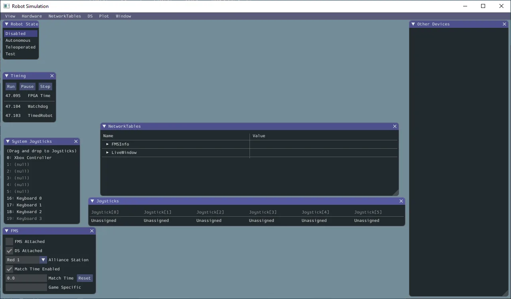
Glass does not natively "log" data that it handles though; This makes it great for realtime diagnostics, but is not a great logging solution for tracking data mid-match.
This is a great intro to how to get started with Glass:
https://docs.wpilib.org/en/stable/docs/software/dashboards/glass/index.html
For the most part, you'll be interacting with the NetworkTables block, and adding visual widgets using Plot and the NetworkTables menu item.
Elastic
Elastic is a telemetry interface oriented more for drivers, but can be useful for programming and other diagnostics. Elastic excels at providing a flexible UI with good at-a-glance visuals for various numbers and directions.
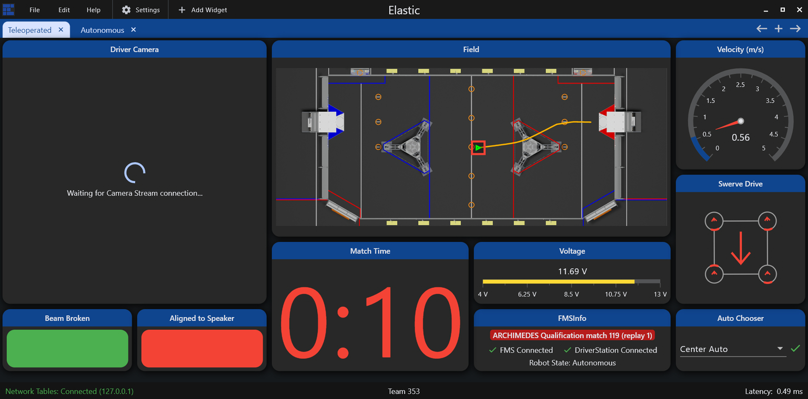
Detailed docs are available here:
https://frc-elastic.gitbook.io/docs
As a driver tool, it's good practice to set up your drivers with a screen according to their preferences, and then make sure to keep it uncluttered. You can go to Edit -> Lock Layout to prevent unexpected changes.
For programming utility, open a new tab, and add widgets and items.
Plotting Data
Mechanism2d
tags:
- stubSuccess Criteria
- Create a basic Arm or Elevator motion system
- Create a Mechanism 2D representation of the control angle
- Create additional visual flair on mechanism to help indicate mechanism context
Physics Simulation
Success Criteria
- Create a standard Arm or Elevator
- Model the system as a Mechanism2D
- Create a Physics model class
- Configure the physics model
- Tune the model to react in a sensible way. It does not need to match a real world model
Brief rundown of some code
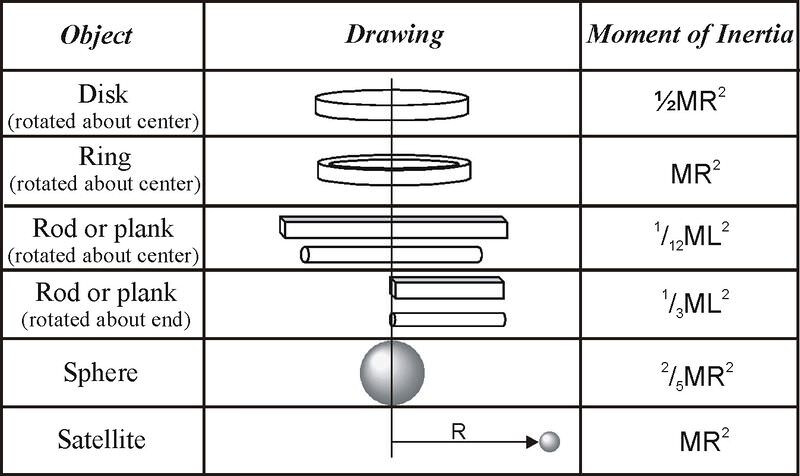
AdvantageKit
Success Criteria
- ??? Do we need or want this here?
- Need to find a way to actually use it efficiently in beneficial way
Goals
- Understand how to set up Advantagekit
Basic Odometry+Telemetry
aliases:
- Field2d
- Field OdometrySynopsis
Success Criteria
- Create a Widget on a dashboard to show the field
- Populate the Field with your robot, and one or more targets
- Utilize the Field to help develop a "useful feature" displayed on the Field
As a telemetry task, success is thus open ended, and should just be part of your development process; The actual feature can be anything, but a few examples we've seen before are
- showing which of several targets your code has deemed best, and react to it
- a path your robot is following, and where the bot is while following it
- The current Vision targets and where your bot is when seeing them
- A field position used as an adjustable target
- The projected path for a selected auto
- Inidcate proximity or zones "zones" for performing a task, such as the acceptable range for a shooting task or intaking process.
Odometry Fundamentals
Odometry is also known as Position Tracking. In FRC, this is generally regarded as knowing the position of your robot in the game field. It is most beneficial when combined with the robot to then have the robot move between positions on the field, and interact with other known positions.
Actually obtaining odometry depends on the design of the bot: Differential Drive Odometry or Swerve Odometry , and often involves vision systems via LimeLight Odometry or PhotonVision Odometry
This document is concerned with the prerequisite: Being able to actually view, compare, and validate positions using robot telemetry.
Odometry Telemetry
Telemetry for Odometry revolves around the Field2D object. Both Glass and Elastic can display the Field2D object as a game field on the dashboard, including associated robot positions and any secondary objects.
In general, Glass is the superior option for most programming tasks and development, allowing easier customization to help reduce clutter and provide clarity between objects.
The WPILib Docs are excellent at helping demonstrate many of these examples:
https://docs.wpilib.org/en/stable/docs/software/dashboards/glass/field2d-widget.html
Pose
In Robots, a Pose represents a specific location and state of a robot's actuator. Within the context of odometry, a pose represents the robot's location on a 2D plane. In most cases, this means the location on the game field.
In order to represent such a state, we need 3 things: The X position, the Y position, and a rotation.
In WPILib, this is handled by the Pose2d object, which can be provided to and returned from many utilities interacting with the robot position, including drivetrain path planning, vision, simulation, and telemetry.
Field2D Basics
The Field2D object in WPILib contains a number of utilities for keeping tabs on odometry. It can be added with just a couple lines.
class Drivetrain extends SubsystemBase{
Field2D field = new Field();
public Drivetrain(){//constructor
//We only want to send the actual Field object _once_,
//so we often do it in the constructor. Changes will be
//sent automatically as the Field2d object itself is updated.
//Preferred: Set the NetworkTables name explicitly,
//and give it a unique, descriptive name
SmartDashboard.putData("ChassisField",field);
// This form uses the default name "Field" as the key.
// Not recommended in most cases
//SmartDashboard.putData(field);
}
}
This creates a blank, empty field, with your robot position, probably at (0,0) in the bottom left corner, on the blue side of the field.
Meaningfully updating the robot pose is out of scope, and differs by drivetrain type; However, the basic gist is
class Drivetrain extends SubsystemBase{
Field2D field = new Field();
//Set up an odometry object to track our robot
DifferentialDrivePoseEstimator odometry=new DifferentialDrivePoseEstimator(
/* Complex constructor parameters; not relevant*/
)
public Drivetrain(){//constructor
SmartDashboard.putData("ChassisField",field);
}
public void periodic(){
//Read the odometry object and set the pose. //Reference only
field.setRobotPose(odometry.getPoseMeters());
// Or, we can just set it manually for testing.
field.setRobotPose(new Pose2d(2.7,3.1, new Rotation2d(Math.PI/2.0) ));
}
}
Now, when we open our Field2D widget in Glass, we'll see that our robot is at a new position. If we fully implemented our Pose Estimator object, we'd see that this provides realtime tracking of our position.
A .getRobotPose() also exists, but tends to be less useful in practice, as most classes that will interact with the Robot and Field will likely have access to the Odometry object directly.
Note, that the Field2d object we create is a unique reference, with it's own unique local data; only the NetworkTables key might have overlap when using default keys. This means if we want to properly share a Field across multiple classes, we either need to fetch the NetworkTables data and copy it over, create a single Field object in RobotContainer and pass it to, or create a DriverField object as a Singleton that can facilitate a single object.
Displaying Useful Targets
Where Field2d objects really shine is in adding supplemental information about other field objects. The utility varies by game, but it's great for showing a variety of things such as
- Targets/objectives
- Nearest/best target
- Nearest game piece (detected by vision systems)
These can be done using the getObject(name) method; This grabs the named object from the field, creating it if it doesn't already exist.
class Drivetrain extends SubsystemBase{
Field2D field = new Field();
public Drivetrain(){//constructor
SmartDashboard.putData("ChassisField",field);
}
public void periodic(){
//Can provide any number of pose arguments
field.getObject("GamePieces").setPoses(
new Pose2d(1,1),
new Pose2d(1,2),
new Pose2d(1,3),
);
//You can also pass a single List<Pose2d>
//if you have a list of poses already
field.getObject("BestGamePiece").setPose(
new Pose2d(1,2)
);
}
}
Note It's worth considering that for objects that never move, you could set objects once in the constructor, and they work fine. However, if the user accidentally moves them in the UI, it creates a visual mis-match between what the code is doing and what the user sees. As a result, it's often better to just throw it in a Periodic.
Field2d + User Input
A niche, but very useful application of field objects is to get precise driver feedback on field location data. This can be done using the following code setup:
class Drivetrain extends SubsystemBase{
Field2D field = new Field();
public Drivetrain(){//constructor
SmartDashboard.putData("ChassisField",field);
//Set the pose exactly once at boot
field.getObject("DriverTarget").setPose(
new Pose2d(1,2)
);
}
public Command aimAtCustomTarget(){
return run(()->{
var target=field.getObject("DriverTarget").getPose();
//Do math to figure out the angle to target
//Set your drivetrain to face the target
};
}
public void periodic(){
//No setting DriverTarget pose here!
};
}
In this case, we take advantage of the "set once" approach in constructors; The drivers or programmers can modify the position, and then we now read it back into the code.
This can be very useful for testing to create "moving targets" to test dynamic behavior without having to drive the bot. It can also help you create "simulation" poses for testing math relating to Pose2D objects.
is especially true for simulation, as this allows you quickly test pose-related functions and makes sure that things happen how you expect.
One practical application is match-specific targets for cooperating with allies. An example is in 2024 Crescendo: a common game tactic was to "pass" rings across the field, by shooting to an open area near where your allies would be. However, since the game pieces can get stuck in/on robots, and different robots have different intakes, and each ally has different sight lines, making the ideal pass target unknown until the actual match is about to start. An adjustable target let the alliance sort it out before a match without having to change the code.
Displaying Paths
When doing path-planning for drivetrains, it's often helpful to display the full intended path, rather than a lot of individual poses.
class Drivetrain extends SubsystemBase{
Field2D field = new Field();
public Drivetrain(){//constructor
SmartDashboard.putData("ChassisField",field);
//Set the pose exactly once at boot
field.getObject("DriverTarget").setPose(
new Pose2d(1,2)
);
}
public Command buildAuto1(){
var trajectory=// Get the trajectory object from your path tool
field.getObject("autoTrajectory").setTrajectory(trajectory);
return run(()->{
//draw the rest of the owl
};
}
}
In this use case, the work will likely be done inside your Auto class after selecting the appropriate one.
Singletons
Success Criteria
- Create a Singleton class
- Use it in multiple places in your code
Summary
Singletons are a coding structure (or "pattern") that represents a unique entity. It's designed to allow one, and only one instance of a class.
This tends to be useful for controlling access to unique items like physical hardware, IO channels, and other such items.
The techniques used in this pattern are also helpful for cases where you might be fine with multiple instances, but you need to restrict the total number, or keep track in some way.
Bare Minimum Singleton pattern
public ExampleSingleton{
private static ExampleSingleton instance;
//note private constructor
private ExampleSingleton(){}
public static ExampleSingleton getInstance(){
//Check to see if we have an instance; If not, create it.
if(instance==null) instance = new ExampleSingleton();
//If so, return it.
return instance;
}
// Methods just work normally.
public double exampleMethod(){
return 0;
}
}
There's a few key details here:
private ExampleSingleton(){}The constructor is private, meaning you cannot create objects usingnew ExampleSingleton(). If you could do that, then you would create a second instance of the class! So, this is private, meaning only an instance of the class itself can create an instance.public static ExampleSingleton getInstance(); This does the heavy lifting: It sees if we have an instance, and if not, it actually creates one. If we have an instance, it just returns a reference to it. This is how we ensure we only ever create one instance of the class. This is static, which allows us to call it on the base class (since we won't have an instance until we do).private static ExampleSingleton instance;This is the reference for the created instance. Notice that it'sstatic, meaning that the instance is "owned" by the base class itself.
Example Sensor Singleton
public ExampleSensorSystem{
private static ExampleSensorSystem instance;
//Example object representing a physical object, belonging to
//an instance of this class.
//If we create more than one, our code will crash!
//Fortunately, singletons prevent this.
private Ultrasonic sensor = new Ultrasonic(0,1);
private ExampleSensorSystem(){} //note private constructor
public static ExampleSensorSystem getInstance(){
//Check to see if we have an instance; If not, create it.
if(instance==null) instance = new ExampleSensorSystem();
//If so, return it.
return instance;
}
public double getDistance(){
return sensor.getRangeInches();
}
}
Elsewhere, these are all valid ways to interface with this sensor, and get the data we need
ExampleSensorSystem.getInstance().getDistance();
var sensor = ExampleSensorSystem.getInstance();
// do other things
sensor.getDistance();
When To Use Singletons
Rarely is often the right answer. While Singletons are useful in streamlining code in some circumstances, they also can obscure where you use it, and how you're using it. Here's the general considerations
- You have something that is necessarily "unique"
- It will be accessed by several other classes, or have complicated scope.
- it is immutable: Once created, it won't be changed, altered or re-configured.
- You will not have any code re-use
In cases where it's less obvious, the "dependency injection" pattern makes more sense. You'll see the Dependency pattern used in a lot of FRC code for subsystems. Even though these are unique, they're highly mutable, and we want to track access due to the Requires and lockouts.
Similarly, for sensors we probably one multiple of the same type. This means if we use a Singleton, we would have to re-write the code several times! (or get creative with class abstractions).
This pattern consists of passing a reference to items in a direct, explicit way, like so.
//We create an item
ExampleSubsystem example = new ExampleSubsystem();
ExampleCommand example = new ExampleCommand(exampleSubsystem);
class ExampleCommand(){
ExampleSubsystem example;
ExampleCommand(ExampleSubsystem example){
this.example = example;
}
public void exampleMethod(){
//has access to example subsystem
}
}
Threading
aliases:
- Threads
- FuturesA Future is a simplified, and much more user friendly application of threading
Success Criteria
- ???
Primer on Threads
A "thread" normally refers to a single chain of code being executed. Most code is "single threaded", meaning everything happens in order; For something to be done, it has to wait its turn.
With proper code setup, you can make it appear that code is doing multiple things at once. There's a few terms for this, but usually "concurrency" or "time sharing" come up here. However, you're still fundamentally waiting for other code to finish, and a slow part of code holds up everything. This might be a complex computation, or a slow IO transfer across a network or data bus.
Tasks like these don't take computational time, but do take real world time in which we could be doing other things.
Threads, on the other hand, can utilize additional processor cores to run code completely isolated and independently. Which is where the trouble starts.
Thread Safety
Threads come with a bit of inherent risk: Because things are happening asynchronously (as in, not in sync with each other), you can develop issues if things are not done when you expect them to be
//Set up two variables
var x;
var y;
//These two tasks are slow, so make a thrad for it!
Thread.spawn(()-> x=/*long computation for X*/)
Thread.spawn(()-> y=/*long computation for y*/)
//Sum things up!
var z = x+y
This will completely crash; It's unlikely that both threads A and B will have finished by the time the main thread tries to use their values. This example is obvious, but in practice, this can be very sneaky and difficult to pin down.
Keep in mind anything running a co-processor is inherently a separate thread! These are usually wrapped by helpful containers to streamline interactions, but there's times where this distinction is important.
Actual example of this data race
In 2024, we had code managing Limelight data, which would
- Check
tv, the target valid data: This value means everything else is valid - Get
txandty, along withgetBotPose - Try to computer our pose
- .... and data is wrong?
What happened was simply that in some cases, after checking tv to assert valid data, the data changed, causing our calculations to break. The remote system (effectively a different thread) changed the data underneath us.
In some cases, we'd get values that should be valid, but instead they resulted in crashes.
Dealing with those
There's lots of strategies to manage threads, most with notable downsides.
- Avoiding threads: The easiest strategy, but you don't improve performance
- Mutexes: Short for "mutually exclusive", and represents a lock. When using data shared with threads, you lock it, and unlock it when you're done. Notably, this means you spend a good amount of effort and time trying to deal with these locks, and make sure they're where they should be.
- Splits and joins: If a thread ends, you don't have problems! So, you can just check a thread state and see if it's done with your value. Don't forget to restart it if needed.
- Message passing: Simply don't share data. Instead, just throw it in a queue, and let stuff handle it when it needs to.
There's other strategies as well, but this brings us to...
Futures
A Future combines several of those into one, very user friendly package. Conceptually, it represents a "future value" that has not yet been calculated, while actually containing the code to get that value.
Because it's oriented with this expectation, they're easy to think about and use. They're almost as straightforward as any other variable.
//create a future and pass it some work.
CompletableFuture<double> future = new CompletableFuture.supplyAsync( ()-> {Timer.delay(5); /*some long running calculaton*/ return 4;} );
System.out.println("waiting....");
System.out.println( future.get() )
That's it. For the simplicity involved, it doesn't feel like you're using threads.... but you are. Notice that waiting prints out instantly; about 5 seconds before the number, in fact.
Futures handle most of the "busywork" for you; Managing thread operation, checking to see if it's done, and what the return value is. The thread runs in the background, but if it's not done by the time you get to future.get(), it'll automatically stop the main thread, wait until the future thread is done, get the value, and then resume the main thread. This will demonstrate it clearly. However, if the future is done, you just race on ahead.
//create a future and pass it some work.
CompletableFuture<double> future = new CompletableFuture.supplyAsync( ()-> {Timer.delay(5); /*some long running calculaton*/ return 4;} );
System.out.println("waiting....");
Timer.delay(6); // do some busywork on the main thread too
System.out.println("Done with main thread!");
System.out.println( future.get() ); //will print instantly; The thread finished during main thread's work!
Actually using them in FRC
Threads would be really nice in a few places, but in particular, building autos. Autos take a very long time to build, and you have a lot of them. And you don't want them wasting time if you're not actually running an auto.
But remember that Futures represent a "future value", and "contain the code to build it". A Command is a future value, and has a process to build it.... so it's a perfect fit. But you also have to select one of several autos. This is easily done:
CompletableFuture<Command> selectedAutoFuture = CompletableFuture.supplyAsync(this::doNothing);
SendableChooser<Supplier<Command>> autoChooser = new SendableChooser<>();
A full example is in /Programmer Guidance/auto-selection, but the gist is that
- A Future takes a
Supplier<Command>: A function that returns a command - The AutoChooser then has a list of functions that build and return an auto command.
- When you change the chooser, you start a new future, and start building it.
- If and when the auto process should start.... the code just waits for the process to finish as needed, and runs it.
Conveniently, you don't need to return values. You can, if needed, run the void version, using a Runnable or non-returning lambda.
CompletableFuture<?> voidedFuture = CompletableFuture.supplyAsync(()->{});
if(voidedFuture.isDone()) /* do a thing */ ;
While not exactly the intended use case, this allows you to easily run and monitor background code without worry.
Gotchyas
Be aware, that as with all threads you generally should not
- Write to data accessible by other threads; You don't know when something is trying to read that value. Do writes in the main thread.
- Read data being written to by other threads; This should be easy to reason about. Constants and fixed values are fine, but don't trust state variables.
Additionally, Futures are most effective when your code starts a computation, and then reacts to the completion of that computation afterward. They're intended for run-once use cases.
For long-running background threads, you'd want to use something else better suited to it.
Pseudo Threads
Psuedo-threads are "thread-like" code structures that look and feel like threads, but aren't really.
WPILib offers a convenient way to run psuedo-threads through the use of addPeriodic(). This registers a Runnable at a designated loop interval, but it's still within the thread safety of normal robot code.
For many cases, this can certain time-sensitive features, while mitigating the hazards of real threads.
Real Threads
Native Java Threads are a suitable way to continuously run background tasks that need to truly operate independent of the main thread. However, any time they interface with normal threads, you expose the hazard of data races or data corruption; Effectively, data changes underneath you, causing weird numerical glitches, or outright crashes.
In these cases, you need to meticulously manage access to the threaded data. Java has numerous built in helpers, but there's no shortcut for responsible coding.
Mutexes and Synchronized
The easiest way is use of the synchronized keyword in java; This is a function decorator (like public or static), which declares that a function
private double number=0;
public synchronized double increment(){
number+=1;
}
public synchronized double double_increment(){
number+=2;
}
// do some threads and run our code
public periodicThreadA(){ increment(); }
public periodicThreadB(){ double_increment(); }
This is it; If both A and B try to run increment simultaneously, it's thread will block until increment is accessable. Because of how we structure FRC code, this is often a perfectly suitable strategy; Any function trying to run a synchronized call has to wait until the other synchronized functions are done.
However, this comes with potential performance issues: The lock is actually protecting the base object (this, or the whole class object), rather than the more narrow value of number. So all synchronized objects share one mutex; Meaning if you have multiple, independently updating values, they're blocking each other needlessly.
We can get finer-grain control by use of structures like this:
private double number=0;
private Object numberLock = new Object();
public double increment(){
synchronized (numberLock){
number+=1;
}
}
public double double_increment(){
synchronized (numberLock){
number+=2;
}
}
// do some threads and run our code
public periodicThreadA(){ increment(); }
public periodicThreadB(){ double_increment(); }
This structure is identical, but now we've explicitly stated the mutex; We can see it's locking on the function increment, rather than the data we care about, which is number.
Note that in both cases, any access to number needs to go through a synchronized item.
Helpfully, you can clean this up for many common cases, as shown in the following example: Any Object class (any class or data structure; effectively everything but Int, Float, and boolean), can be locked directly; Avoiding a separate mutex. However, we may want to develop a notation to demarcate thread-accessed objects like this.
private Pose2D currentPose = new Pose2D();
public double do_pose_things(){
synchronized (currentPose){ //item can hold it's own thread mutex
currentPose = new Pose2d();
}
}
Queing and message passing
Message passing is another threading technique that allows threads to interact safely. You simply take your data, and toss it to another thread, where it can pick it up as it needs to.
SynchronousQueue is a useful and simple case; This is a queue optimized to interface handoffs between threads. Instead of suppliers adding values indirectly, this queue allows functions to directly block until the other thread arrives with the data it wants. This is useful when one side is significantly faster than the other, making the time spent waiting non-critical. There's methods for both fast suppliers with slow consumers, and fast consumers with slow suppliers.
SynchronousQueue<integer> queue = new SynchronousQueue<integer>;
public void fastSupplier(){ //ran at high speeds
int value = 0; /*some value, such as quickly running sensor read*/
queue.offer(value); //will not block; Will simply see there's no one listening, and give up
}
public void slowConsumer(){ //ran at low speeds
int value = queue.take(); //will block this thread, waiting until fastSupplier tries to make another offer.
//do something with the value
}
In most cases though, you want to keep track of all reported data, but the rate at which it's supplied doesn't always match the rate at which it's consumed. A good example is vision data for odometry. It might be coming in at 120FPS, or 0FPS. Even if it's coming in at the robot's 50hz, it's probably not exactly timed with the function.
Depending on the requirements, a ArrayBlockingQueue (First in First Out) or LinkedBlockingDeque (Last in First Out). These both have different uses, depending on the desired order.
ArrayBlockingQueue<Pose2d> queue = new ArrayBlockingQueue<Pose2d>();
public void VisionSupplier(){
Optional<Pose2d> value = vision.getPoseFromAprilTags();
if(value.isPresent(){
if(queue.remainingCapacity() < 1) queue.poll() // delete the oldest item if we don't have space
queue.offer(value); //add the newest value.
}
}
public void VisionConsumer(){ //ran at low speeds
var value = queue.take(); //grab the oldest value from the queue or block to wait for it
odometry.update(value);
}
Message passing helps you manage big bursts of data, have threads block/wait for new data, but do introduce one problem: You have to make sure your code behaves well when your queue is full or empty.
In this case, it's sensible to just throw away the oldest value in our queue; We'll replace it with a more up-to-date one anyway.
We also block when trying to retrieve new data. This is fine for a dedicated thread, but when ran on our main thread this would cause our bot to halt if we drive away from a vision target. In that case, we'd want to check to see if there's a value first, or use poll() which returns null instead of waiting. The java docs can help you find the desired behavior for various operations.
Also be wary about the default sizes: By default, both queues can be infinitely large, meaning if your supplier is faster, you'll quickly run out of memory. Setting a maximum (reasonable) size is the best course of action.
Git Basics
Goals
Understand the typical Git operations most helpful for day-to-day programming
Completion Requirements
This module is intended to be completed alongside other tasks: Learning Git is best done by doing, and doing requires having code to commit.
- Read through the Git Fundamentals section
- Initialize a git repository in your project
- Create an initial commit
- Create several commits representing simple milestones in your project
- When moving to a new skill card, create a new branch to represent it. Create as many commits on the new branch as necessary to track your work for this card.
- When working on a skill card that does not rely on the previous branch, switch to your
mainbranch, and create a new branch to represent that card. - On completion of that card (or card sequence), merge the results of both branches back into Main.
- Upon resolving the merge, ensure both features work as intended.
Topic Summary
- Understanding git
- workspace, staging, remotes
- fetching
- Branches + commits
- Pushing and pulling
- Switching branches
- Merging
- Merge conflicts and resolution
- Terminals vs integrated UI tools
Git Fundamentals
Git is a "source control" tool intended to help you manage source code and other text data.
Git has a lot of utility, but the core concept is that git allows you to easily capture your files at a specific point in time. This allows you to see how your code changes over time, do some time travel to see how it used to look, or just see what stuff you've added since your last snapshot.
Git does this by specifically managing the changes to your code, known as "commits". These build on each other, forming a chain from the start of project to the current code.
At the simplest, your project's history something like the following
Git is very powerful and flexible, but don't be intimidated! The most valuable parts of git are hidden behind just a few simple commands, and the complicated parts you'll rarely run into. Bug understanding how it works in concept lets you leverage it's value better.
Diffs
Fundamental to Git is the concept of a "difference", or a diff for short. Rather than just duplicating your entire project each time you want to make a commit snapshot, Git actually just keeps track of only what you've changed.
In a simplified view, updating this simple subsystem
/**Example class that does a thing*/
class ExampleSubsystem extends SubsystemBase{
private SparkMax motor = new SparkMax(1);
ExampleSubsystem(){}
public void runMotor(){
motor.run(1);
}
public void stop(){/*bat country*/}
public void go(){/*fish*/}
public void reverse(){/*shows uno card*/}
}
to this
/**Example class that does a thing*/
class ExampleSubsystem extends SubsystemBase{
private SparkMax motor = new SparkMax(1);
private Encoder encoder = new Encoder();
ExampleSubsystem(){}
public void runMotor(double power){
motor.run(power);
}
public void stop(){/*bat country*/}
public void go(){/*fish*/}
public void reverse(){/*shows uno card*/}
}
would be stored in Git as
class ExampleSubsystem extends SubsystemBase{
private SparkMax motor = new SparkMax(1);
+ private Encoder encoder = new Encoder();
ExampleSubsystem(){}
- public void runMotor(1){
- motor.run(1);
+ public void runMotor(double power){
+ motor.run(power);
}
public void stop(){/*bat country*/}
With this difference, the changes we made are a bit more obvious. We can see precisely what we changed, and where we changed it.
We also see that some stuff is missing in our diff: the first comment is gone, and we don't see go(), reverse() or our closing brace. Those didn't change, so we don't need them in the commit.
However, there are some unchanged lines, near the changed lines. Git refers to these as "context". These help Git figure out what to do in some complex operations later. It's also helpful for us humans just taking a casual peek at things. As the name implies, it helps you figure out the context of that change.
We also see something interesting: When we "change" a line, Git actually
- Marks it as deleted
- adds a new line that's almost the same
Simply put, just removing a line and then adding the new one is just easier most of the time. However, some tools detect this, and will bold or highlight the specific bits of the line that changed.
When dealing with whole files, it's basically the same! The "change" is the addition of the file contents, or a line-by-line deletion of them!
Commits + Branches
Now that we have some changes in place, we want to "Commit" that change to Git, adding it to our project's history.
A commit in git is a just a collection of smaller changes, along with some extra data for keeping track. The most relevant is
- A commit "hash", which is a unique key representing that specific change set
- The "parent" commit, which these changes are based on
- The actual changes + files they belong to.
- Date, time, and author information
- A short human readable "description" of the commit.
These commits form a sequence, building on top from the earliest state of the project. We generally assign a name to these sequences, called "branches".
A typical project starts on the "main" branch, after a few commits, you'll end up with a nice, simple history like this.
It's worth noting that a branch really is just a name that points to a commit, and is mostly a helpful book-keeping feature. The commits and commit chain do all the heavy lifting. Basically anything you can do with a branch can be done with a commit's hash instead if you need to!
Multiple Branches + Switching
We're now starting to get into Git's superpowers. You're not limited to just one branch. You can create new branches, switch to them, and then commit, to create commit chains that look like this:
Here we can see that mess for qual 4 and mess for qual 8 are built off the main branch, but kept as part of the competition branch. This means our main branch is untouched. We can now switch back and forth using git switch main and git switch competition to access the different states of our codebase.
We can, in fact, even continue working on main adding commits like normal.
Being able to have multiple branches like this is a foundational part of how Git's utility, and a key detail of it's collaborative model. This is more traditionally referred to as a "git tree", since we can see it starts from a single trunk and then branches out into all these other branches.
However, you might notice the problem: We currently can access the changes in competition or main, but not both at once.
Merging
Merging is what allows us to do that. It's helpful to think of merging the commits+changes from another branch into your current branch.
If we merge competition into main, we get this. Both changes ready to go! Now main can access the competition branch's changes.
However, we can equally do main into competition, granting competition access to the changes from main.
Now that merging is a tool, we have unlocked the true power of git. Any set of changes is built on top of each other, and we can grab changes without interrupting our existing code and any other changes we've been making!
This feature powers git's collaborative nature: You can pull in changes made by other people just as easily as you can your own. They just have to have the same parent somewhere up the chain so git can figure out how to step through the sequence of changes.
Workspace, Staging, and Commits
When managing changes, there's a couple places where they actually live.
The most apparent one is your actual code visible on your computer, forming the "Workspace". As far as you're concerned, this is just the files in the directory, or as seen by VSCode. However, Git sees them as the end result of all changes committed in the current branch, plus any additional, uncommitted changes.
The next one is "staging": This is just the next commit, but in an incomplete state. When setting up a commit, staging is where things are held in the meantime. Once you complete a commit, the staging area is cleared, and the changes are moved to a proper commit in your git tree.
Staging is not quite a commit, as the changes represented here can be easily over-written by staging new changes from your Workspace. But, it's not quite the workspace either, and doesn't automatically follow modifications to your code.
Because of this, Staging is extremely useful for code review! Staging a specific change is a great way to assert that that part is working and tested, even if you're not ready to make a commit yet.
In terms of our usual git tree, Staging and Workspace fit in right at the end, like so.
Lastly, is the actual commits that form your history. We generally won't deal with them individually, and instead just bundle them up in "branch". A branch is is just a helpful shorthand that names a specific commit, but in practice is used to refer to all prior changes leading up to that current commit.
Remotes + Github
Git is a distributed system, and intentionally designed so that code can be split up and live in a lot of different places at once, but interact with each other in sensible ways for managing the code.
The most obvious place it lives is your computer. You have a full copy of the git tree, plus your own staging and workspace. This is often called the "local" repository.
Next is a "remote" repository, representing a remote git server. Often this is Github, using the default remote name of "origin".
The important consideration is that your computer operates totally independently of the remote unless you intend to interact with it! This means you can do almost any Git task offline, and don't even need a remote to make use of Git.
Of course, being set up this way means that if you're not paying attention, you might not catch differences between Remote and Local git states. It's rarely an actual problem, but can be confusing and result in extra work. It's good practice to be aware of where your code is relative to origin, and make sure you push your code up to it when appropriate.
When the origin is indicated specifically, you'll see it shown before the branch name: Main would go from main -> origin/main, like you see here in Git Graph, showing that we have 1 commit locally that doesn't exist on the origin. Or, we're ahead by one commit.
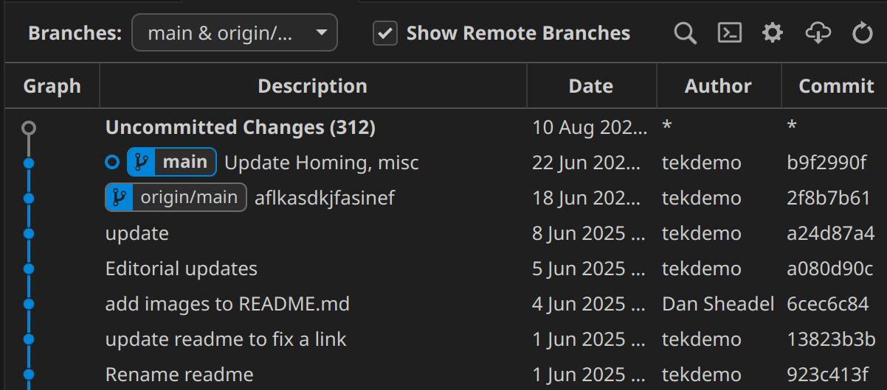
Handling Merge Conflicts
Often when doing merges, you'll run into a "merge conflict", and some parts of your code get replaced with massive compiler errors and weird syntax. Don't panic!
Merge conflicts happen when two branches change the same code. Git can't figure out what the "right answer" is, and so it needs a helping hand. To facilitate this, it has some special syntax so that you can see all information at a glance, but it's not always obvious that it's just being helpful!
Let's look at the simplest possible merge conflict: Being in main, and merging dessert
From an original file containing
Best food is pizza
The commit in main has the following change
-Best food is pizza
+Best food is salad
with dessert having this change
-Best food is pizza
+Best food is cheesecake
The merge is then making Git decide what's the optimal food. Git is not equipped for this debate, so it's up to us humans. Git prepares the file in question using "merge markers" around the issue, which provide some useful info to resolve it
<<<<<<< HEAD
Best food is salad
=======
Best food is cheesecake
>>>>>>> dessert
<<<<<<< HEAD -> indicates the start of a merge conflict. HEAD just means "last commit on current branch". Since we're on main, that means this code is just the result of following the code along the Main branch. VSCode will add additional information above this to help clarify.
>>>>>>> dessert -> is the end of merge conflict. dessert is the branch you're merging from; In other words, it's the result of following the proposed changes along the cheesecake branch. Again, VSCode will add additional info to help.
======= -> is the separator between the two branches' code.
It's helpful to remember the goal of a merge: To put the two codebases together in a way that makes sense and is correct! So a merge conflict is resolved by making code that works, meaning there's several different ways to fix it!
One option is just accepting the change in your current branch, yielding
Best food is salad
This just means you've ignored the proposed change from the other branch (dessert in this case)
The other option is accept the incoming change, and ignore what your branch had.
Best food is cheesecake
In some cases it's both! Maybe you're just fine with two best foods.
Best food is salad
Best food is cheesecake
Of course, you're after correctness. It's possible that after the update neither branch is quite right, and you have to adjust both.
Best side dish is salad
Best dessert is cheesecake
Or, it could be neither! Maybe the right solution has become something else entirely.
Best food is breakfast burritos
Most of the time, a merge conflict should be very easy to deal with if you know the parts of the code you're working with.
Just move the code around until it works like both branches expected, then delete the merge marker, separator, and any unnecessary code, and you're good to go!
And, don't worry if you missed one! Git will spot these conflict markers if you try to commit one without sorting it out.
If you get lost, ask for help! When dealing with code someone else wrote, you simply might not know what the best option is when coming out of it. That's fine! No tool can replace good communication.
Handling Compile errors caused by merges
Merge conflicts aside, just because a merge didn't have a conflict, doesn't mean the code works. A sometimes surprising result stems from the fact that Git doesn't understand code, it just understands changes!
The most likely reason you'll see this is someone changing a function name in one branch, while the other branch adds a new occurrence of it. Let's consider adding this code in our current branch
@@ MainBranch: RobotContainer.java @@
//filecontext
+ exampleSubsystem.callSomeFunction();
//filecontext
and merging in this change from another branch.
@@ CleanupBranch: ExampleSubsystem.java @@
//filecontext
- public void callSomeFunction(){
+ public void betterNamedFunction(){
//filecontext
In this case, main doesn't know about the name change, and CleanupBranch doesn't know that you added a new call to it. This means callSomeFunction() no longer exists, leading to an error.
As with merge conflicts, it's up to you to figure out what's correct. In cases like this, you just want to adjust your new code to use the new name. But it sometimes happens that the other branch did something that needs to be changed back, such as deleting a function no one was using... until now you're using it.
Again, the purpose of the merge is to make it work! You're not done with a merge until everything works together as intended.
The critical Git commands
A lot of Git's power boils down to just using the simple usage of a few basic commands.
While using the command line is optional, most good Git tools retain the name of these operations in graphical interfaces. After all, they're using the same operations behind the scenes.
Because of this, a bit of command line knowledge can help clarify what the more user-friendly tools are trying to do, and show you exactly why they're helpful.
Creating a new repository
git init will creates a new git repository for your current project. It sets the "project root" as the current folder, so you'll want to double-check to make sure you're in the right spot!
VSCode's built in terminal will default to the right folder, so generally if your code compiles, you should be in the right spot. Once the repository is created, git commands will work just fine from anywhere inside your project.
Getting Status
Knowing what your code is up to is step 1 of git. These commands
git status just prints out the current repo status, highlighting what files are staged, and what have unstaged changes, and where you are relative to your remote. If you've used other git commands, the effects will show up in git status. Run it all the time!
git log will open a small terminal dialogue walking you through changes in your branch (hit q to exit). However, it's often unhelpful; It contains a lot of data you don't care about, and is missing clarity on ones you do.
git log --oneline tends to be more helpful ; This just prints a one-line version of relevant commits, making it much more useful.
Adding Changes to build a commit
git add <files> is all that's needed in most cases: This will add all changes present in a specific file.
git add <directories> works too! This adds all changes below the specified folder path. Be mindful to not add stuff you don't want to commit though! Depending on the project and setup, you may or may not want to add all files this way.
git add . is a special case you'll often see in git documentation; . is just a shorthand for "the current folder" . Most documentation uses this to indicate "Stage the entire project", and is mostly helpful for your very first commit. Afterwards, we'd recommend a more careful workflow.
git reset <staged file/dir> will will remove a file's changes from Staging and put them back in the Workspace ; Meaning, the change itself is preserved, but it won't be changed. In practice, you probably won't do this much, as it's easier to use a GUI for this.
Confirming a commit
git commit -m "describe changes here" tends to be the beginner friendly approach. This makes a new commit with any staged changes.
git commit will usually open a small terminal editor called Vim with commit information and let you type a commit message. However, this editor is famous for it's "modal" interface, which is often surprising to work with at first. We'll generally avoid using it in favor of VSCode's commit tooling.
If you get caught using the Vim editor for a commit, this is a quick rundown of the critical interaction.
escape key-> undo whatever command you're doing, and and exit any modes. Mash if you're panicking.
i -> When not in any mode, enter Insert mode (INSERT will be shown at the bottom). You can then type normally. Hit escape to go back to "command mode"
: -> start a command string; Letters following it are part of an editor command.
:w -> Run a write command (this saves your document)
:q -> Run a quit command (exit the file). This will throw an error if you have unsaved changes.
:q! -> The ! will tell Vim to just ignore warnings and leave. This is also the "panic quit" option.
:wq -> Runs "save" and then "quit" using a single command
This means the typical interaction is i (to enter insert mode), type the message, escape, then :wq to save and quit.
You can also abandon a commit by escape + :q!, since an empty commit message is not allowed by default.
Creating Branches
git branch NameOfNewBranch: This just makes a new branch with the current name. Note, it does not switch to it! You'd want to do that before trying to do any commits!
Note, the parent node is the last commit of your current branch; This is not usually surprising if you're working solo, but for group projects you probably want to make sure your local branch is up to date with the remote!
Switching Branches
git switch NameOfBranch: This one's pretty simple! It switches to the target branch.
git switch --detach <commithash> : This lets you see the code at a particular point in time. Sometimes this can be useful for diagnosing issues, or if you want to change where you're starting a new branch (maybe right before a merge or something). --detach just means you're not at the most recent commit of a branch.
You might see git checkout NameOfBranch in some documentation; This is a common convention to "check out" a branch. However, the git checkout command can do a lot of other stuff too. For what we need, git switch tends to be less error prone.
Note, Git will sometimes block you from changing branches! This happens if you have uncommitted changes that will conflict with the changes in the new branch. It's a special kind of merge conflict.
Git has a number of tools to work around this, but generally, there's a few simpler options, depending on the code in question
- Delete/undo the changes: This is a good option if the changes are inconsequential such as accidental whitespace changes, temporarily commented out code for testing, or "junk" changes. Just tidy up and get rid of stuff that shouldn't be there.
- Clean up and commit the changes: This is ideal if the changes belong to the current branch, and you just forgot them previously
- "Work in progress" commit: If you can't delete something, and it's not ready for a proper commit, just create a commit with message beginning with "WIP"; This way, it's clear to you and others that the work wasn't done, and to not use this code.
- use "git stash" the changes: This is git's "proper" resolution for this, but the workflow can be complicated, easy to mess up, and it's out of scope for this document. We won't use it often.
Merging code
git merge otherBranchName : This grabs the commits from another branch, and starts applying them to your current branch. Think of it as merging those changes into yours. If successful, it creates a merge commit for you.
git merge otherBranchName --no-commit : This does the merge, but doesn't automatically make a commit even when successful! This is often preferable, and makes checking and cleanup a bit easier. Once you've ran it, you can finish the commit in the usual way with git commit
git merge --abort is a useful tool too! If your merge is going wrong for whatever reason, this puts you back to where you were before running it!
git merge (note no branch name) merges in new commits on the same branch; This is useful for collaborate projects, where someone else might update a branch.
Keeping up to date with a Remote
git fetch connects to your remote (Github), and makes a local copy of everything the remote system has! This is one of the few commands that actually needs internet to function.
Note, this does not change anything on your system. It does as the name implies, and just fetches it. Your local copies of branches remain at the commit you left them, so git fetch is always safe to run, and some tools run it automatically.
Pulling code from a remote + updating branches
git pull will contact the remote system, and apply changes from the remote branch to your local branch.
Behind the scenes, this is just running git fetch and then git merge. So, if you run git fetch and then try to work without internet, you can still get things done! Just use git merge with no branch name.
Pushing code to a remote
git push does this. By default it uses the same name, making this a short and simple one.
git push will fail if the push would cause a merge conflict on the remote system. This can happen if the remote branch has been modified since you branched off of it.
If this happens, you'll need to update your repository with git fetch or git pull , resolve the conflict, and try again
Git from VSCode
Handling Git operations from VS Code is normally a very streamlined operation, and it has good interfaces to do otherwise tricky operations.
Git Graph Plugin
This plugin provides some notable visualization tools that further improves Git handling in VS Code. We'll assume this is installed for the remainder of the tutorial here.
https://marketplace.visualstudio.com/items?itemName=mhutchie.git-graph
Install that first!
Git Sidebar
The icon on left side will open the git sidebar, which is the starting point for many git operations.
Opening it will provide some at a glance stuff to review.
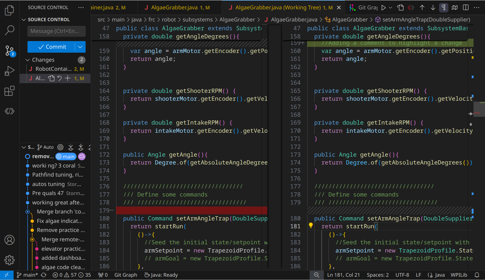
We can see a lot of useful things:
At the top we can see any uncommitted changes, and the file they belong to. We'll deal with this when reviewing changes and making new commits. 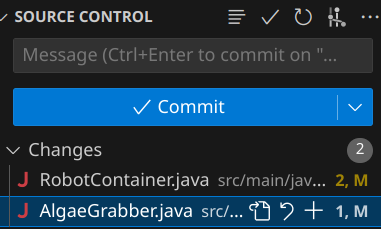
At the bottom (which might be folded down and labelled > Outline or > Graph), we can see our commit history for the current branch. The @main represents the current branch state, and icon represents the Origin (Github). If we're ahead or behind the origin, we can see it at a glance here.
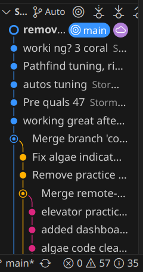
Note, we also see main at the very bottom; That's always there, giving us our current branch at a glance.
Reviewing Changes + Making commits
The easiest way to review changes is through the Git Sidebar: Just click the file,and you'll see a split view.
Changes will be shown in one of two ways. "Additions" are shown as a green highlight on the right side. On the left, you can see a ///////////////// placeholder; This helps align the code so that you can easily keep track of where stuff gets inserted!
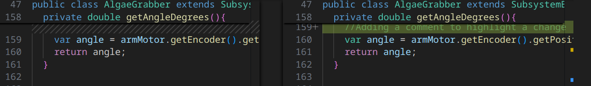
Deletions look similar, but reversed. Left gets a red, right gets a placeholder. 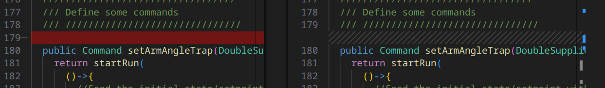
Changes to part of a line are either an addition and removal, or a small highlighted change of the particular bits.
Note, you can actually type here! The right hand side is editable, allowing you to revise things if you see a change that's concerning. That side just represents the current state of the file in the workspace.
The left side is locked; This represents the prior state of the file, which can only be changed by adding more commits.
You can approve/confirm changes in a couple ways. The easiest is to simply use the "Stage Changes" button by the filename in the sidebar; This stages all changes in a particular file. 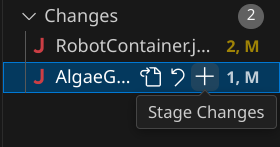
In many cases, it's helpful to handle them one by one: If you right click on a change (or selected text that includes one or more changes), you'll see some options besides the normal text editing ones 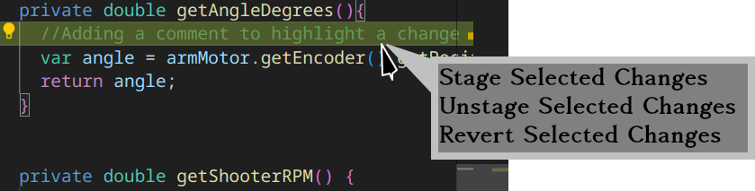
As the name implies, you can Stage changes if you want them, Unstage them (if you want to remove it from the commit you're putting together).
Note, you can also Revert it. In this case, reverting means that the change is gone! Added lines vanish, changed numbers go back to what they were, and reverting a deletion puts all the lines back! Be very careful here to not undo your work!
Note, that there's also a Revert/Discard Changes button too! Fortunately, this one checks with you. We'll rarely use it, but make sure to not hit it accidentally! 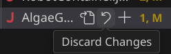
Once we've staged some changes, we'll any staged changes separate from any unstaged changes
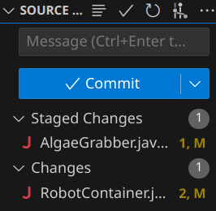
You can commit with un-staged changes just fine, just be mindful! We'll touch on best practices later.
Once you've added all changes you want to include in the commit, just enter the message and click "Commit". Done!
Remote interactions + VS Code
VS Code has some useful built in operations to push or pull branches! These will typically pop up automatically, with the helpful options being
Push-> Does a standard pushPull-> Does a standard pullPublish Branch-> This is a normal Push, but applies to newly created local branches. This normally requires a couple other small steps, which this handles automaticallySync-> Don't use this one!
Be careful about the "Sync" button! Unlike other VSCode options, "Sync" will try to push and pull at the same time; However, in case of a merge conflict, it might try to resolve it using esoteric git operations behind the scenes. While this sometimes works, when something goes wrong fixing it properly is extremely challenging!
In almost all cases, using a git pull , verifying the merge, and then a git push is a better workflow!
Viewing the git tree with Git Graph
We're now looking at the Git Graph specific stuff, so make sure that's installed!
There's two ways to launch it. One is using VS Code's Command Palette, activated by CTRL+Shift+P then typing "View Git Graph" or "git log" to pull up this particular one. 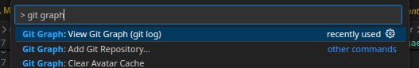
The other is by clicking "Git Graph" along the bottom toolbar. 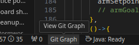
Both of these will take you to a good review interface, where you can see the status of many branches, the commit log, and how things merged and diverted! This is from our 2025 season code.
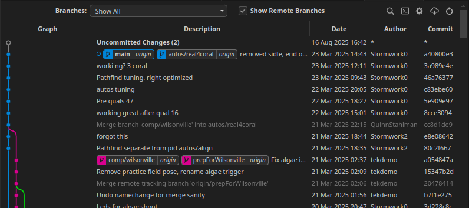
Just this interface provides a lot of value: You can easily see the commit history, how branches have diverged and been merged, and check to see what branches are ahead or behind of the origin.
If you click a commit, you get a more detailed status, but most notably what files were altered. 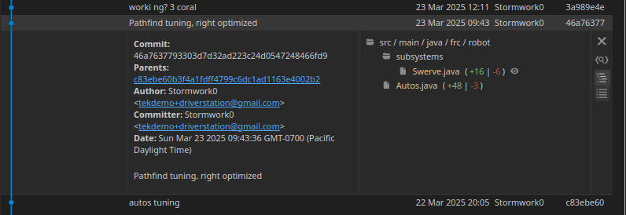 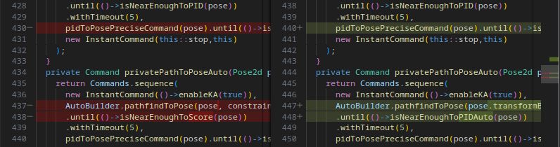
And, if you click the file in the commit details, it'll show you what that commit changed!
This is a very fast and effective way to look through your project and catch up on what's happening.
There's a lot of other value here if you click around, including being able to right click and checkout or switch to various branches!
VSCode's Git Terminal
VS Code's terminal often pops up during many other operations, but if you don't see it, you can access it through the menu. 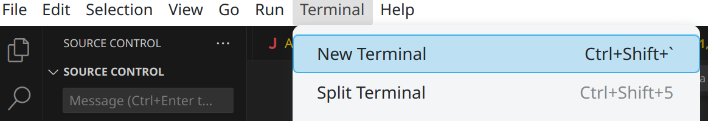
Since we usually work on Windows, this will often open up a Powershell, which is usually sub-optimal for what we want to use a terminal for. Git Bash is usually nicer. You can change this with the Command Pallete (CTRL+Shift+P), and selecting Terminal: Select Default Profile.
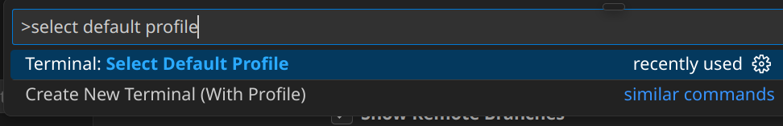
If Bash is available, click it! Any new terminals will use the Git bash, which will have color, some at-a-glance git info, and generally more helpful all around.
Other Git tools
There's a lot of tools that interact with your Git repository, but it's worth being mindful about which ones you pick! A lot of tools wind up changing normal git operations into renamed or altered versions that do a lot of things at once. This can make learning it harder, and if something goes wrong, fixing the results can be extremely difficult. Stick to the basics until you know what's happening and you can properly judge if a new tool is worth using.
Making the best use of git in FRC
A typical FRC workflow
Creating the initial project setup:
git initto set up our new project.git add .to stage all the files in their blank, default state- Commit the code, using VSCode's interface or with the terminal
git commit -m "initial commit"
Doing the code work:
git branch featurebeingaddedto set up a new branch for your taskgit switch featurebeingaddedto select your new branch- Add the code
- Review the new code using VSCode, staging parts that are confirmed to work
- Commit the code (via Code or terminal)
- Repeat commits until done
Handling review and merging. Be mindful of local and remote branch states for this!
- Test and review your code! Make sure it works in the final state.
git fetchto ensure your git repo is aware of any changes.git merge origin/main --no-commit-> Bring in all new changes- Fix, test, review your code with all the new base project code.
git committo finalize the merge.git pushto push your branch with the merge completed.- Work with your maintainer (a mentor or veteran) to pull your new, validated changes back into
main!
Feature Branches
Branches are best when they're small, focused, and well defined.
A great workflow is using so called "topic branches" or "feature branches": In this workflow, a branch represents a feature you're adding, or a bug you're fixing. Once the feature is added and working, the branch is Done. You merge your branch back into the Main branch, and you can move onto another feature in a new branch!
By doing this, you keep each branch simple, easy to test, and easy to merge. It also helps prevent the issue of long-running branches; Where your code is isolated from a long time, and drifts apart from everyone else's code in main. That ends up with you not working on quite the same code base as other people, and you'll miss out on features, fixes that everyone else has, and they'll miss out on yours.
A good feature branch name also helps keep you as a programmer constrained to the task at hand.
Branch Naming
To facilitate "feature branch" convention, name your branches after feature itself, rather than the part of code it's affecting. Make sure that the branch name implies an "end state" at which point you can consider it Done and stop working on it.
As an example, some good initial branch names are add-far-shots, add-climb-routine, or fix-intake-stalling-issue. Since we're usually adding or fixing things, we can often omit that in the actual name leaving us with far-shots, climb-routine, intake-stall-issue), but it's helpful to always pretend it's there unless a clearer verb exists (like remove or adjust.
Early on, you might be tempted to name your branches after robot systems, like intake, shooter, or the like. But don't do this! The intake will always exist on the robot, so your branch has no clear end state!
Instead, name it something like intake-bringup. This provides an end-condition: Once the intake is brought up, functioning, and tested, the branch is done, and you can merge it back into main.
In some cases, it's helpful to indicate which part of the robot you're working on though: The optimal method is using subsystemname/feature. This is especially true of features relevant to various subsystems like bringup, which just yields intake/bringup, elevator/bringup, etc.
Merge other branches into yours
Merging is more useful than just sending your changes back to Main. You can use merging to keep up with other features that interact with the code you're working with.
As an example, let's say you're trying to bring up an Indexer system, which interacts with a Intake and a Shooter. During early development, you might see some branches like this
Intake and Shooter aren't done enough to merge back into main, but the indexer can't really be tested because you need to move it through the intake and shooter. But, you also don't want to actually do all that work yourself.
So, just merge the intake/bringup and shooter/bringup branches!
There you go! Now you can continue your work, using the preliminary work from the other branches. As they adjust and fix things, you can merge their code, and they could also merge yours into their branches before finally verifying 2 or 3 of these subsystems work properly.
There's a catch here: The branches in question might not be fully ready for you to pull them! It's always a good idea to talk to whoever's working on that code to make sure that it's in a state that's good to go. Sometimes they'll just need to adjust up one or two things, fix a variable/method name, or other times they might suggest you wait for some bigger cleanup or process fixes.
Merge main->Topic before Topic->main
Similar in concept to the above in some ways! By our process definitions, Main should always be in a good state, meaning you can pull it at any time. So, before declaring your branch Done and getting it in Main, go ahead and pull Main and test things first!
Now you can test the indexer in the full codebase without any risk of accidentally putting a bug in main, and any adjustments are part of the indexer/bringup branch like shown here
At long last, with everything fully integrated, we can finally get our changes back into main, knowing with confidence it works as expected.
PhotonVision Model Training
tags:
- stubSuccess Criteria
- Oh no
QuestNav
PathPlanning Tools
tags:
- stubSuccess Criteria
- Choose a PathPlanning tool
- Implement the Java framework for the selected tool
- Model the robot's physical parameters for your tool
- Drive a robot along a target trajectory using one of these tools
Followup to:
Auto Differential
Swerve Motion
The tools
https://docs.wpilib.org/en/stable/docs/software/pathplanning/index.html
https://choreo.autos/
https://pathplanner.dev/home.html
Understanding the concepts
Planning vs other method
Do you need path planning to make great autos? Maybe! But not always.
PathPlanning can give you extremely fast, optimized autos, allowing you to squeeze every fraction of a second from your auto. However, it can be challenging to set up, and has a long list of requirements to get even moderate performance.
Further Research
Pure Pursuit
Unlike "path planning" algorithms that attempt to define and predict robot motion, Pure Pursuit simply acts as a reactive path follower, as the name somewhat implies.

This algorithm is fairly simple and conceptually straightforward, but with some notable limitations. However, the concept is very useful for advancing simpler autos
Autopilot
https://therekrab.github.io/autopilot/technical.html
https://www.chiefdelphi.com/t/introducing-autopilot-a-novel-solution-to-holonomic-motion-control/504244/21
System Identification
tags:
- stubPart of:
SuperStructure Flywheel
FeedForwards
Success Criteria
- Write the tuning functions for a system
- Get the system ID values
- Update the system with the values
From Recalc
https://www.chiefdelphi.com/t/hardware-testers-needed-optimal-pid-gain-estimation-in-recalc/503535/4
Lookup Tables
Success Criteria
Synopsis
A pre-computed list of input and output values.
Can be used to help model non-trivial conditions where mathematical models are complicated, or don't apply effectively to the problem at hand.
Commonly used for modelling Superstructure Shooter
AdvantageKit
Success Criteria
- ??? Do we need or want this here?
- Need to find a way to actually use it efficiently in beneficial way
Goals
- Understand how to set up Advantagekit
Code Structuring
Success Criteria
- Set up a mock project with a nominal, standard code structure
Project should have a subsystem that
- Is in a subsystem folder
- Has 3 components in a (logic, Physics Simulation, Mechanism2d)
- Has a factory method to get a control command (can be mocked up)
- Has a trigger that indicates a mechanism state (can be mocked up based on timers)
Has an additional sensor subsystem system that - Provides a trigger for a condition (can be mocked up)
Has a controller and
Has an Autos class to hold autos - With an auto chooser initialization
- A single basic auto using subsystem and sensor
Basic Odometry+Telemetry
aliases:
- Field2d
- Field OdometrySynopsis
Success Criteria
- Create a Widget on a dashboard to show the field
- Populate the Field with your robot, and one or more targets
- Utilize the Field to help develop a "useful feature" displayed on the Field
As a telemetry task, success is thus open ended, and should just be part of your development process; The actual feature can be anything, but a few examples we've seen before are
- showing which of several targets your code has deemed best, and react to it
- a path your robot is following, and where the bot is while following it
- The current Vision targets and where your bot is when seeing them
- A field position used as an adjustable target
- The projected path for a selected auto
- Inidcate proximity or zones "zones" for performing a task, such as the acceptable range for a shooting task or intaking process.
Odometry Fundamentals
Odometry is also known as Position Tracking. In FRC, this is generally regarded as knowing the position of your robot in the game field. It is most beneficial when combined with the robot to then have the robot move between positions on the field, and interact with other known positions.
Actually obtaining odometry depends on the design of the bot: Differential Drive Odometry or Swerve Odometry , and often involves vision systems via LimeLight Odometry or PhotonVision Odometry
This document is concerned with the prerequisite: Being able to actually view, compare, and validate positions using robot telemetry.
Odometry Telemetry
Telemetry for Odometry revolves around the Field2D object. Both Glass and Elastic can display the Field2D object as a game field on the dashboard, including associated robot positions and any secondary objects.
In general, Glass is the superior option for most programming tasks and development, allowing easier customization to help reduce clutter and provide clarity between objects.
The WPILib Docs are excellent at helping demonstrate many of these examples:
https://docs.wpilib.org/en/stable/docs/software/dashboards/glass/field2d-widget.html
Pose
In Robots, a Pose represents a specific location and state of a robot's actuator. Within the context of odometry, a pose represents the robot's location on a 2D plane. In most cases, this means the location on the game field.
In order to represent such a state, we need 3 things: The X position, the Y position, and a rotation.
In WPILib, this is handled by the Pose2d object, which can be provided to and returned from many utilities interacting with the robot position, including drivetrain path planning, vision, simulation, and telemetry.
Field2D Basics
The Field2D object in WPILib contains a number of utilities for keeping tabs on odometry. It can be added with just a couple lines.
class Drivetrain extends SubsystemBase{
Field2D field = new Field();
public Drivetrain(){//constructor
//We only want to send the actual Field object _once_,
//so we often do it in the constructor. Changes will be
//sent automatically as the Field2d object itself is updated.
//Preferred: Set the NetworkTables name explicitly,
//and give it a unique, descriptive name
SmartDashboard.putData("ChassisField",field);
// This form uses the default name "Field" as the key.
// Not recommended in most cases
//SmartDashboard.putData(field);
}
}
This creates a blank, empty field, with your robot position, probably at (0,0) in the bottom left corner, on the blue side of the field.
Meaningfully updating the robot pose is out of scope, and differs by drivetrain type; However, the basic gist is
class Drivetrain extends SubsystemBase{
Field2D field = new Field();
//Set up an odometry object to track our robot
DifferentialDrivePoseEstimator odometry=new DifferentialDrivePoseEstimator(
/* Complex constructor parameters; not relevant*/
)
public Drivetrain(){//constructor
SmartDashboard.putData("ChassisField",field);
}
public void periodic(){
//Read the odometry object and set the pose. //Reference only
field.setRobotPose(odometry.getPoseMeters());
// Or, we can just set it manually for testing.
field.setRobotPose(new Pose2d(2.7,3.1, new Rotation2d(Math.PI/2.0) ));
}
}
Now, when we open our Field2D widget in Glass, we'll see that our robot is at a new position. If we fully implemented our Pose Estimator object, we'd see that this provides realtime tracking of our position.
A .getRobotPose() also exists, but tends to be less useful in practice, as most classes that will interact with the Robot and Field will likely have access to the Odometry object directly.
Note, that the Field2d object we create is a unique reference, with it's own unique local data; only the NetworkTables key might have overlap when using default keys. This means if we want to properly share a Field across multiple classes, we either need to fetch the NetworkTables data and copy it over, create a single Field object in RobotContainer and pass it to, or create a DriverField object as a Singleton that can facilitate a single object.
Displaying Useful Targets
Where Field2d objects really shine is in adding supplemental information about other field objects. The utility varies by game, but it's great for showing a variety of things such as
- Targets/objectives
- Nearest/best target
- Nearest game piece (detected by vision systems)
These can be done using the getObject(name) method; This grabs the named object from the field, creating it if it doesn't already exist.
class Drivetrain extends SubsystemBase{
Field2D field = new Field();
public Drivetrain(){//constructor
SmartDashboard.putData("ChassisField",field);
}
public void periodic(){
//Can provide any number of pose arguments
field.getObject("GamePieces").setPoses(
new Pose2d(1,1),
new Pose2d(1,2),
new Pose2d(1,3),
);
//You can also pass a single List<Pose2d>
//if you have a list of poses already
field.getObject("BestGamePiece").setPose(
new Pose2d(1,2)
);
}
}
Note It's worth considering that for objects that never move, you could set objects once in the constructor, and they work fine. However, if the user accidentally moves them in the UI, it creates a visual mis-match between what the code is doing and what the user sees. As a result, it's often better to just throw it in a Periodic.
Field2d + User Input
A niche, but very useful application of field objects is to get precise driver feedback on field location data. This can be done using the following code setup:
class Drivetrain extends SubsystemBase{
Field2D field = new Field();
public Drivetrain(){//constructor
SmartDashboard.putData("ChassisField",field);
//Set the pose exactly once at boot
field.getObject("DriverTarget").setPose(
new Pose2d(1,2)
);
}
public Command aimAtCustomTarget(){
return run(()->{
var target=field.getObject("DriverTarget").getPose();
//Do math to figure out the angle to target
//Set your drivetrain to face the target
};
}
public void periodic(){
//No setting DriverTarget pose here!
};
}
In this case, we take advantage of the "set once" approach in constructors; The drivers or programmers can modify the position, and then we now read it back into the code.
This can be very useful for testing to create "moving targets" to test dynamic behavior without having to drive the bot. It can also help you create "simulation" poses for testing math relating to Pose2D objects.
is especially true for simulation, as this allows you quickly test pose-related functions and makes sure that things happen how you expect.
One practical application is match-specific targets for cooperating with allies. An example is in 2024 Crescendo: a common game tactic was to "pass" rings across the field, by shooting to an open area near where your allies would be. However, since the game pieces can get stuck in/on robots, and different robots have different intakes, and each ally has different sight lines, making the ideal pass target unknown until the actual match is about to start. An adjustable target let the alliance sort it out before a match without having to change the code.
Displaying Paths
When doing path-planning for drivetrains, it's often helpful to display the full intended path, rather than a lot of individual poses.
class Drivetrain extends SubsystemBase{
Field2D field = new Field();
public Drivetrain(){//constructor
SmartDashboard.putData("ChassisField",field);
//Set the pose exactly once at boot
field.getObject("DriverTarget").setPose(
new Pose2d(1,2)
);
}
public Command buildAuto1(){
var trajectory=// Get the trajectory object from your path tool
field.getObject("autoTrajectory").setTrajectory(trajectory);
return run(()->{
//draw the rest of the owl
};
}
}
In this use case, the work will likely be done inside your Auto class after selecting the appropriate one.
Swerve Bringup
Success Criteria
- Create new drive subsystem
- Create and configure a YAGSL drivetain
- Tune Yagsl drivetrain and controls for manual driving
- Adjust parameters to ensure accurate auto driving and odometry tracking
Swerve Odometry
Swerve Motion
Goals:
Interface with swerve for autos and non-trivial teleop interactions
Success Criteria
- Changing point of rotation in real time
- Move from Point to Point using a PID
- Move from point to point using a motion profile
- Create a command that allows translation while aimed at a bearing
- Create a command that allows translation while aimed at a Pose2d
Swerve Basics
Goals:
- Understand how swerve works
- Teleop Interactions for existing swerve
- Reading odometry
- Reset/Initialize odometry
Success Criteria
- Use an existing Swerve configuration
SuperStructure Flywheel
aliases:
- FlywheelSuperstructure component that holds a large amount of kinetic energy at a high velocity. Typically part of a subsystem oriented at launching game pieces.
Success Criteria
- Create a Flywheel system
- Tune with appropriate FeedForwards + PID to hit and maintain target RPMs
Difference to a Roller
In some senses, none: A "Flywheel" is technically a spinning mass that provides inertial power to linked systems. We often add flywheels to our shooter rollers to add mass and make shots more consistent.
In FRC, we often use the term "flywheel subsystem" to help disambiguate the "spinning mass" part of a shooter from the "angular adjustment" part of a shooter. Otherwise, without good nomencalture, both parts get called "shooter", which is relatively unhelpful and can make things a bit confusing.
However, there's also physical differences in control and intent. The extra mass requires significantly more energy, resulting in either slower spinup, or much more power draw that can brown out your robot. We're also adding this inertia to stabilize shots, implying a desire for accuracy, precision, and consistency. In other words, this is very deep in the zone of performance tuning.
Power Considerations
When spinning up a high-inertia system, the power draw can be incredible, typically pulling the full allotted power for all motors involved.
If we consider a brand new FRC battery, they have a rated capacity of 300A; A single FRC motor will pull 80-100A of that. If we have two motors, we'll pull 160A-200A. Keeping in mind we have other motors doing other things, especially 4 motors doing driving, you can easily sag the system voltage, causing loss of power and browning out one or more critical components.
Because of this, it's often a strategic choice on how how to handle power. Some teams (1540) advise just removing all power constraints: The reasoning is that by giving unlimited power to your flywheels, you get them up to speed quickly, trusting that the voltage sag is short enough that the various power regulation systems can recover properly.
Other teams implement dynamic voltage constraints; Polling the various robot systems, and allocating power according to current system draw, and subsystem needs.
Both methods are worth considering, and both have been done on Stormbots in various seasons.
Default Commands and automatic behavior
When operating with flywheels, the ideal behavior is simply to never have to change velocity. Theoretically, if the velocity doesn't change, you don't use power.
In reality, this is impossible ; Air resistance, bearing friction, motor internal resistance, and precession all work to sap flywheel energy and speed. And of course, every time we change speed, we're using power from our battery.
It's also kind of unsafe to keep flywheels spinning at extremely high velocities all the time, and we often need to change velocity for different shots anyway.
As such, it's good practice to consider what to do when not shooting. This will change each season and each robot, and might change based on how a game involves. But, good considerations include:
- Can we idle to a slower, safer speed instead of stopping?
- Coasting to slow down rather than using brake or active PIDs
- When a shot is abandoned, can we maintain shooting speed for a time to prevent a need for significant adjustment a short time later?
- Can we give drivers options to boost RPM in advance?
The goal is to maximize safety, minimize lag between driver + action, and minimize total speed adjustments.
System Identification + automatic tuning
For precision velocity control, the FeedForward model, PID tunings, and Motion Profile are all very important. You mostly need to get and maintain the target RPM extremely quickly, while minimizing overall settle time.
In some cases, you might actually find that minor PID overshoot doesn't cause problems, and can result in quicker time-to-target and overall settling.
Sometimes, using SysID can help you; This is a program that runs some test procedures, using the resulting physical measurements to analyze system response, and thus generate PID and FF values. If set up correctly, these values can be fed back into your robot config, helping you quickly account for hardware changes, wheel wear, and other factors that might have impacted your system performance.
Instead of painful precision tuning via graphs, implementing SysID into your java code can let you run these similar to an Auto sequence, letting you respond quickly to emergency repairs during competition.
See Crescendo's robot code for examples on automated flywheel tuning procedures
Note, that the recommended approach is still to do good feed-forward modelling and motion profiles before PID tuning. With this setup, it's likely that you can use relatively large PI values for getting up to target speeds, and PD terms and flywheel inertia will resolve in good disturbance rejections.
Communication + Lighting
Drivers need to know when they can utilize an on-target flywheel. When in performance mode, they will be cutting every corner for performance, and their trust in robot feedback is crucial. Unfortunately, RPM is largely invisible to drivers in competitions.
In these cases, the robot's best feedback source is a LED Subsystem ; Simply have the bot lighting give the all-clear to fire. In practice, this helps the drivers get a "feel" for spinup time, and in competitions gives them certainty that a shot will work as expected.
Note, that the feedback itself can be challenging: Remember, the goal is "will our shot make it" more than "Is the shooter at the target RPM". Some notable considerations:
- Sometimes far-away shots at higher velocities only succeed with a lower RPM error than closer, nearby ones going at a slower speed.
- Overshoot/undershoot might fall within an permissible, but cause missed shots due to how the acceleration affects the physics.
- Flywheel speed is only one aspect; You also have robot ground speed, rotational speed, and (possibly) the angle of your shooter configuration. Drivers must know what is and isn't accounted for.
At the end of the day, your system might simply green-light a good RPM range and be good enough. Or, you might need to create a complex state machine to track and count system stability and settle time, or chain boolean logic for other conditions.
Whatever you do, your efforts put toward driver indicators will always be in vain if your drivers don't trust it. These systems require good communication with drivers to establish the trust boundaries for indicators, and to maintain that trust with accurate signals.
Dynamic Setpoints vs Stepped Setpoints
When working with a fixed-angle shooter, your system will always have to account for shot distance by adjusting RPM continuously. If RPM adjustment won't work, you simply can't make make a shot.
However, when given an adjustable angle shooter (see 2024 robot), programmers have 2 control axes to resolve shot distance. This allows a great amount of freedom in what a shot looks like. This lets us apply our design criteria, and consider our options:
- Fix the angle, and have dynamic RPM adjustment
- Fix the RPM, and adjust the angle
- Adjust both at once all the time.
With the last one ruled out, you probably want to consider which parameter to lock in place to optimize shots for a given area. In most cases, the best approach is to use an interpolating Lookup Table (LUT). This allows you to convert a given known value (usually distance) into a tested combination of angle and distance.
Such a table can be very quickly generated using practice field elements, and provides very robust performance. With good distance spacing, you can quickly fix problem zones, and then nature of a LUT allows you to seamlessly switch between which output is fixed..
Trajectory Calculation + Optimized control
This is an ongoing advanced topic, and in early stages: Flight Trajectory Calculations
See also:
Flight Trajectory Calculations
Success Criteria
Advanced computation for calculating optimal shot angles and rpms